Monsters
- Table Explanation / Notes
- Normal
- Mamel Family
- Chintala Family
- Piko Hammer Family
- Armordillo Family
- Droplet Ninja Family
- Mr. Drone Family
- Stone Beast Family
- Copycat Mask Family
- Schubell Family
- Dosukoi Family
- Snacky
- Tiny Phoenix
- Escargon
- Queen Spider
- Armor Spider
- N'dubba
- Weapon
- Throwing
- Magic
- Item Change
- Stealing
- Dragon
- Ghost
- Drain
- One-eyed
- Bomb
- Water
- Oni
- Other
Table Explanation / Notes
- Defense:
- Gets divided by 2 if a monster is being attacked by another monster.
- Element:
- Monsters can have multiple elements.
- May change within the same monster family, depending on the rank.
- Sleep:
- Chance monster is sleeping when generated.
- Wake:
- Condition in which the monster wakes up from natural sleep.
- Drop:
- Monster's item drop rate.
- Item:
- Monster's fixed item drop.
- SP:
- Monster's special attack usage rate.
| Name | Info |
|---|---|
| Fast |
Moves at x2 or x3 speed. Speed returns to normal when sealed. |
| Slow |
Moves at 1/2 speed. Speed returns to normal when sealed. |
| Floating |
Will not trigger traps, and will not slip on ice. Cannot move over water unless it also has the Flying element. Effect is nullified when a Gravity Statue is present. |
| Flying |
Can move over water and areas without ground. Monsters with Flying element always come with Floating element. |
| Wall-clip |
Moves and attacks through walls. Cannot move through unbreakable walls. Monsters with wall clip can see Shiren anywhere on the current floor. Both effects are nullified when sealed. |
| Water-only | Only able to move in water. |
| Amphibious | Can move across both land and water. |
| Magic |
Special attack is magic-based and can be reflected by Echo Shield. Special attack is nullified when a No-Magic Statue is present. |
| Weapon | Attack is halved when splashed by water from a Water Pot. |
| One-eyed | Takes additional damage from Cyclops Killer. |
| Drain | Takes additional damage from Drain Buster. |
| Ghost |
Takes additional damage from Ghost Sickle. Receives damage if hit by Herb, Otogiriso, or Heal Staff. |
| Dragon | Takes additional damage from Dragon Killer and Ryujin Sword. |
| Bomb |
Special attack is bomb or explosion related. Takes additional damage from Crescent Arm. Reduce damage from Bomb type special attacks with a Blast Shield. Splash water from a Water Pot to seal them. |
| Type | Condition |
|---|---|
| 1 Tile | Wakes up when Shiren walks next to it. |
| 3 Tiles | Wakes up when Shiren walks within 3 tiles of it. |
| Low | 25% chance to wake up when Shiren enters or exits the room. 45% chance to wake up when Shiren walks next to it. |
| High | 45% chance to wake up when Shiren enters or exits the room. 75% chance to wake up when Shiren walks next to it. |
Monster Details
Normal
Mamel Family (マムル, あなぐらマムル, 洞窟マムル)
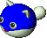
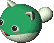
Mascot monster of the Shiren series.
Cave Mamels in Shiren 2 have somewhat lower defense than in other games.
Cave Mamels in Shiren 2 have somewhat lower defense than in other games.
| Name | HP | ATK | DEF | EXP | Element | Sleep | Wake | Drop | Item | Sp | Notes |
|---|---|---|---|---|---|---|---|---|---|---|---|
| Mamel | 5 | 2 | 2 | 2 | - | 0% | 1 Tile | 2% | - | - | Regular attacks only. |
| Pit Mamel | 8 | 4 | 4 | 4 | - | 0% | 1 Tile | 6% | - | - | Same as Mamel. |
| Cave Mamel | 5 | 50 | 55 | 500 | - | 100% | 1 Tile | 10% | - | - | Same as Mamel. High attack. |
Ally / Possession Staff:
| Name | Max Lv | HP+ | ATK+ | Max HP | Max ATK | Notes |
|---|---|---|---|---|---|---|
| Mamel | 50 | 1 | 1 | 55 | 52 | Regular attacks only. |
| Pit Mamel | 50 | 1 | 1 | 58 | 54 | Same as Mamel. |
| Cave Mamel | 50 | 1 | 1 | 55 | 100 | Same as Mamel. |
Chintala Family (チンタラ, ちゅうチンタラ, おおチンタラ)
The secondary mascot monster of the Shiren series.
A notable characteristic is that it grows larger with each increase in rank.
A notable characteristic is that it grows larger with each increase in rank.
| Name | HP | ATK | DEF | EXP | Element | Sleep | Wake | Drop | Item | Sp | Notes |
|---|---|---|---|---|---|---|---|---|---|---|---|
| Chintala | 6 | 3 | 3 | 3 | - | 40% | High | 2% | - | - | Regular attacks only. |
| Mid Chintala | 15 | 9 | 10 | 12 | - | 40% | High | 3% | - | - | Same as Chintala. |
| Big Chintala | 60 | 39 | 39 | 500 | - | 40% | High | 4% | - | - | Same as Chintala. |
Ally / Possession Staff:
| Name | Max Lv | HP+ | ATK+ | Max HP | Max ATK | Notes |
|---|---|---|---|---|---|---|
| Chintala | 50 | 1 | 1 | 56 | 53 | Regular attacks only. |
| Mid Chintala | 50 | 1 | 1 | 65 | 59 | Same as Chintala. |
| Big Chintala | 50 | 1 | 1 | 110 | 89 | Same as Chintala. |
Piko Hammer Family (ピコタン, ポコタン, パコタン)
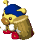
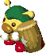
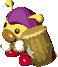
A unique monster that breaks traps and statues in a single hit.
This ability is beneficial for most dungeons, but can prove to be a nuisance in Halfway Well (Trap dungeon).
Higher ranks can only naturally be found in Halfway Well.
Only breaks traps that it can see, so it won't break traps that are only visible to Shiren from eating Sight Grass or equipping a Trapper Bracelet.
This ability is beneficial for most dungeons, but can prove to be a nuisance in Halfway Well (Trap dungeon).
Higher ranks can only naturally be found in Halfway Well.
Only breaks traps that it can see, so it won't break traps that are only visible to Shiren from eating Sight Grass or equipping a Trapper Bracelet.
| Name | HP | ATK | DEF | EXP | Element | Sleep | Wake | Drop | Item | Sp | Notes |
|---|---|---|---|---|---|---|---|---|---|---|---|
| Piko Hammer | 13 | 9 | 6 | 10 | - | 25% | High | 2% | - | - | Breaks traps and statues. Prioritizes attacking Shiren. Moves toward traps and statues if Shiren isn't present. |
| Poko Hammer | 60 | 30 | 29 | 350 | - | 25% | High | 5% | Mallet | - | Same as Piko Hammer. |
| Pako Hammer | 75 | 55 | 40 | 1500 | - | 25% | High | 5% | Mallet | - | Same as Piko Hammer. |
Ally / Possession Staff:
| Name | Max Lv | HP+ | ATK+ | Max HP | Max ATK | Notes |
|---|---|---|---|---|---|---|
| Piko Hammer | 10 | 3 | 3 | 43 | 39 | Special attack breaks traps in front of it. Can break statues in a single hit. |
| Poko Hammer | 10 | 3 | 3 | 90 | 60 | Same as Piko Hammer. |
| Pako Hammer | 10 | 3 | 3 | 105 | 85 | Same as Piko Hammer. |
Armordillo Family (マルジロウ, マルジロウ兄, マルジロウ父)
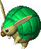
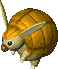
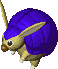
Monster that resembles an armadillo.
Occasionally rolls into a ball and tackles Shiren, making him trip and drop items.
Particularly troublesome when there is water, because items dropped in water may be unrecoverable without items such as Evaporate Scroll.
Carrying a Balance Staff will prevent tripping, as long as it's not inside a Pot.
Occasionally rolls into a ball and tackles Shiren, making him trip and drop items.
Particularly troublesome when there is water, because items dropped in water may be unrecoverable without items such as Evaporate Scroll.
Carrying a Balance Staff will prevent tripping, as long as it's not inside a Pot.
| Name | HP | ATK | DEF | EXP | Element | Sleep | Wake | Drop | Item | Sp | Notes |
|---|---|---|---|---|---|---|---|---|---|---|---|
| Armordillo | 12 | 8 | 8 | 9 | - | 40% | High | 3% | - | 25% | Tackles Shiren, making him trip and drop items. Tackle deals 4 damage and 1 tile of knockback. |
| Armordillo Bro | 13 | 9 | 11 | 11 | - | 25% | High | 3% | - | 30% | Same as Armordillo. Tackle deals 6 damage and 2 tiles of knockback. |
| Armordillo Pop | 70 | 37 | 37 | 700 | - | 25% | High | 3% | - | 35% | Same as Armordillo. Tackle deals 10 damage and 3 tiles of knockback. |
Ally / Possession Staff:
Armordillo's special attack will make a monster drop 1 item. The ability to rapidly obtain items is so powerful that it's said if you can catch an Armordillo Pop inside the Road to the End dungeon, you're pretty much guaranteed to clear it. The dropped items are selected from the current floor's item table. Note that Gamarra monsters will always drop Gitan.
| Name | Max Lv | HP+ | ATK+ | Max HP | Max ATK | Notes |
|---|---|---|---|---|---|---|
| Armordillo | 5 | 2 | 5 | 22 | 33 | Tackles an enemy to make them trip and drop an item. Tackle deals 4 damage and 1 tile of knockback. |
| Armordillo Bro | 5 | 2 | 5 | 23 | 34 | Same as Armordillo. Tackle deals 6 damage and 2 tiles of knockback. |
| Armordillo Pop | 10 | 2 | 5 | 90 | 87 | Same as Armordillo. Tackle deals 10 damage and 3 tiles of knockback. |
Droplet Ninja Family (スイテキマル, ジライヤ, ショウカンマル, ダイジライヤ)
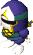
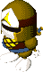
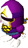
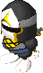
A ninja-like monster that appears often early game.
Occasionally drops traps when defeated, with the type of trap being based on its level.
Can be troublesome if it drops a trap in a hallway.
Doesn't drop a trap if the ground below it is occupied by an item or stairs.
Occasionally drops traps when defeated, with the type of trap being based on its level.
Can be troublesome if it drops a trap in a hallway.
Doesn't drop a trap if the ground below it is occupied by an item or stairs.
| Name | HP | ATK | DEF | EXP | Element | Sleep | Wake | Drop | Item | Sp | Notes |
|---|---|---|---|---|---|---|---|---|---|---|---|
| Droplet Ninja | 12 | 7 | 7 | 9 | - | 25% | High | 80% | Droplet Trap | - | Attempts to drop a trap when defeated. Trap drop takes priority over synthesis seals like 飯 and 銭. |
| Landmine Ninja | 30 | 17 | 15 | 35 | - | 25% | High | 60% | Landmine | - | Same as Droplet Ninja. |
| Summon Ninja | 32 | 18 | 16 | 46 | - | 25% | High | 70% | Summon Trap | - | Same as Droplet Ninja. |
| Explosion Ninja | 69 | 33 | 38 | 300 | - | 25% | High | 70% | Big Landmine | - | Same as Droplet Ninja. |
Ally / Possession Staff:
| Name | Max Lv | HP+ | ATK+ | Max HP | Max ATK | Notes |
|---|---|---|---|---|---|---|
| Droplet Ninja | 20 | 2 | 2 | 52 | 47 | Special attack drops a Droplet Trap and warps away. |
| Landmine Ninja | 20 | 2 | 2 | 70 | 57 | Special attack drops a Landmine and warps away. |
| Summon Ninja | 20 | 2 | 2 | 72 | 58 | Special attack drops a Summon Trap and warps away. |
| Explosion Ninja | 20 | 2 | 2 | 109 | 73 | Special attack drops a Big Landmine and warps away. |
Mr. Drone Family (Mr.ブーン, Mr.ヘリコ, Mr.ジャイロ)
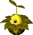
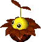
A vegetable-like monster that flies using a propeller on its head.
Runs away from Shiren, and has a high chance to drop beneficial grass when defeated.
Prioritizes running away, similar to Snacky.
The item drop will be lost if defeated over water.
Runs away from Shiren, and has a high chance to drop beneficial grass when defeated.
Prioritizes running away, similar to Snacky.
The item drop will be lost if defeated over water.
| Name | HP | ATK | DEF | EXP | Element | Sleep | Wake | Drop | Item | Sp | Notes |
|---|---|---|---|---|---|---|---|---|---|---|---|
| Mr. Drone | 16 | 6 | 8 | 7 | Floating Flying |
50% | 3 Tiles | 100% | Strength Grass | - | Runs away from Shiren. |
| Mr. Helico | 18 | 8 | 10 | 8 | Fast (x2) Floating Flying |
50% | 3 Tiles | 85% | Happy Grass | - | Same as Mr. Drone. |
| Mr. Gyro | 20 | 10 | 15 | 20 | Fast (x2) Floating Flying |
50% | 3 Tiles | 75% | Revival Grass | - | Same as Mr. Drone. |
Ally / Possession Staff:
Has the second highest growth limit of all monsters.
Doesn't run away as an ally, so you can train it like any other monster.
Doesn't run away as an ally, so you can train it like any other monster.
| Name | Max Lv | HP+ | ATK+ | Max HP | Max ATK | Notes |
|---|---|---|---|---|---|---|
| Mr. Drone | 100 | 1 | 1 | 116 | 106 | Ally: Doesn't run away. Possession: Regular attacks only. |
| Mr. Helico | 100 | 1 | 1 | 118 | 108 | Ally: Doesn't run away. Possession: Warps after receiving damage. |
| Mr. Gyro | 100 | 1 | 1 | 120 | 110 | Ally: Doesn't run away. Possession: Warps after receiving damage. Can also warp using its special attack. |
Stone Beast Family (岩獣ズドン, 岩獣ガガン, 岩獣ドガガーン)
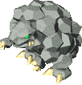
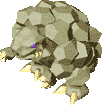
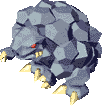
Monster that body slams targets, making them fly away from the impact.
Lv2+ Stone Beast body slams can break through walls and leave targets paralyzed. (Shiren: 3 turns, Enemies: 2 turns)
Each collision with a wall tile deals 5 damage, so having a 弟 seal helps mitigate that damage.
Be careful not to trigger a robbery by being sent outside of a shop due to a body slam.
A body slam in a diagonal direction won't break walls.
Lv2+ Stone Beast body slams can break through walls and leave targets paralyzed. (Shiren: 3 turns, Enemies: 2 turns)
Each collision with a wall tile deals 5 damage, so having a 弟 seal helps mitigate that damage.
Be careful not to trigger a robbery by being sent outside of a shop due to a body slam.
A body slam in a diagonal direction won't break walls.
| Name | HP | ATK | DEF | EXP | Element | Sleep | Wake | Drop | Item | Sp | Notes |
|---|---|---|---|---|---|---|---|---|---|---|---|
| Stone Beast | 55 | 27 | 21 | 40 | - | 35% | High | 10% | - | 5% | Performs a tackle that sends a target flying until they hit a wall or waterway. Tackle deals 5 damage. |
| Rock Beast | 70 | 28 | 26 | 85 | - | 35% | High | 4% | - | 25% | Same as Stone Beast. Tackle deals 10 damage and paralyzes. If the target collides with a breakable wall, they will be sent into the wall by 2 tiles. |
| Boulder Beast | 115 | 102 | 71 | 3100 | - | 35% | High | 32% | - | 20% | Same as Stone Beast. Tackle deals 15 damage and paralyzes. If the target collides with a breakable wall, they will be sent into the wall by 5 tiles. |
Ally / Possession Staff:
| Name | Max Lv | HP+ | ATK+ | Max HP | Max ATK | Notes |
|---|---|---|---|---|---|---|
| Stone Beast | 10 | 3 | 3 | 85 | 57 | Performs a tackle that sends a target flying until they hit a wall. Tackle deals 5 damage. |
| Rock Beast | 10 | 3 | 3 | 100 | 58 | Same as Stone Beast. Tackle deals 10 damage and paralyzes. (Shiren: 3 turns, Enemy: 1 turn). If the target collides with a breakable wall, they will be sent into the wall by 2 tiles. |
| Boulder Beast | 5 | 3 | 3 | 130 | 117 | Same as Stone Beast. Tackle deals 15 damage and paralyzes. (Shiren: 3 turns, Enemy: 1 turn). If the target collides with a breakable wall, they will be sent into the wall by 5 tiles. |
Copycat Mask Family (ものまね仮面, ふるまいカブリ, なりきりマスク)
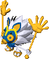
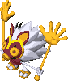
Disguises itself as other monsters, but can't copy their special attacks or stats.
Its disguise will be disabled when sealed, and you can also identify them by swinging a Knowledge Staff.
Never disguises itself as Dosukoi, Gamarra, Zalokleft, Orcan, Spearfish, or N'dubba family monsters.
Mixergons on 50~80F inside the Road to the End dungeon could actually be a disguised Mask monster.
It's also good to seal a monster before throwing an Extinction Scroll, just to be sure it's not actually one of these.
Never spawns asleep, so sleeping monsters are always their real selves. (Excluding monster houses)
You know it's one of these if a flying or amphibious monster is unable to move over or inside water, or if a double/triple speed mosnter is moving at regular speed.
Its disguise will be disabled when sealed, and you can also identify them by swinging a Knowledge Staff.
Never disguises itself as Dosukoi, Gamarra, Zalokleft, Orcan, Spearfish, or N'dubba family monsters.
Mixergons on 50~80F inside the Road to the End dungeon could actually be a disguised Mask monster.
It's also good to seal a monster before throwing an Extinction Scroll, just to be sure it's not actually one of these.
Never spawns asleep, so sleeping monsters are always their real selves. (Excluding monster houses)
You know it's one of these if a flying or amphibious monster is unable to move over or inside water, or if a double/triple speed mosnter is moving at regular speed.
| Name | HP | ATK | DEF | EXP | Element | Sleep | Wake | Drop | Item | Sp | Notes |
|---|---|---|---|---|---|---|---|---|---|---|---|
| Copycat Mask | 20 | 5 | 5 | 10 | - | 0% | High | 1% | - | - | Takes the form of a monster that can be found on that floor. |
| Trickster Mask | 100 | 15 | 25 | 500 | - | 0% | High | 1% | - | - | Same as Copycat Mask. |
| Impostor Mask | 130 | 20 | 40 | 700 | - | 0% | High | 2% | - | - | Same as Copycat Mask. |
Ally / Possession Staff:
| Name | Max Lv | HP+ | ATK+ | Max HP | Max ATK | Notes |
|---|---|---|---|---|---|---|
| Copycat Mask | 50 | 1 | 1 | 70 | 55 | Ally: Takes the form of a monster that can be found on that floor. Possession: Special attack takes the form of the monster in front of it. |
| Trickster Mask | 50 | 1 | 1 | 150 | 65 | Same as Copycat Mask. |
| Impostor Mask | 50 | 1 | 1 | 180 | 70 | Same as Copycat Mask. |
Schubell Family (シューベル, メンベルス, ベルトーベン)
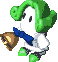
Monster that rings a bell to summon monsters.
Summoned monsters are based on the current floor's monster table.
The summoned monster matches the level of the Schubell family monster that summoned it.
Always performs regular attacks when there isn't enough room to summon other monsters.
It appears Schubell and Menbell cannot summon the following monster families: Schubell, Mixer, Copycat Mask, Dosukoi, Taurus, N'dubba, Spearfish, Orcan, Aqua Dragon, Shotfish, Tiny Phoenix, Escargon, Queen Spider.
Summoned monsters are based on the current floor's monster table.
The summoned monster matches the level of the Schubell family monster that summoned it.
Always performs regular attacks when there isn't enough room to summon other monsters.
It appears Schubell and Menbell cannot summon the following monster families: Schubell, Mixer, Copycat Mask, Dosukoi, Taurus, N'dubba, Spearfish, Orcan, Aqua Dragon, Shotfish, Tiny Phoenix, Escargon, Queen Spider.
| Name | HP | ATK | DEF | EXP | Element | Sleep | Wake | Drop | Item | Sp | Notes |
|---|---|---|---|---|---|---|---|---|---|---|---|
| Schubell | 45 | 18 | 23 | 100 | - | 25% | High | 4% | - | 40% | Summons a level 1 monster based on the current floor's monster table. |
| Menbell | 60 | 50 | 49 | 1600 | - | 25% | High | 2% | - | 30% | Summons a level 2 monster based on the current floor's monster table. |
| Bellthoven | 80 | 55 | 40 | 1900 | - | 25% | High | 2% | - | 20% | Summons 1~3 level 3 monsters based on the current floor's monster table. |
Ally / Possession Staff:
Summons or warps Shiren's ally monsters instead of summoning enemies.
| Name | Max Lv | HP+ | ATK+ | Max HP | Max ATK | Notes |
|---|---|---|---|---|---|---|
| Schubell | 10 | 2 | 1 | 65 | 28 | Warps an ally monster that wandered outside of view back to Shiren. |
| Menbell | 10 | 2 | 1 | 80 | 60 | Same as Schubell, but warps 2 monsters. |
| Bellthoven | 10 | 2 | 1 | 100 | 65 | Same as Schubell, but warps 3 monsters. Also summons ally monsters from monster pots. |
Dosukoi Family (ドスコーイ, ハッキョーイ, ゴッツァーン)
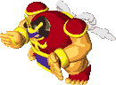
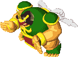
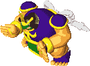
A monster that resembles a sumo wrestler. Appears in post-game dungeons.
Occasionally stomps the ground, shuffling stuff in the room. (Lv1: items, Lv2: characters, Lv3: items and characters)
Can push statues around, and Gottsuan can also push stairs.
Traps will always trigger if a character lands on one as a result of Hakkeyoi or Gottsuan stomping the ground.
Prioritizes moving toward and pushing statues or stairs over Shiren.
Doesn't stomp while pushing statues or stairs.
Items in shops won't move as a result of the ground being stomped.
Occasionally stomps the ground, shuffling stuff in the room. (Lv1: items, Lv2: characters, Lv3: items and characters)
Can push statues around, and Gottsuan can also push stairs.
Traps will always trigger if a character lands on one as a result of Hakkeyoi or Gottsuan stomping the ground.
Prioritizes moving toward and pushing statues or stairs over Shiren.
Doesn't stomp while pushing statues or stairs.
Items in shops won't move as a result of the ground being stomped.
| Name | HP | ATK | DEF | EXP | Element | Sleep | Wake | Drop | Item | Sp | Notes |
|---|---|---|---|---|---|---|---|---|---|---|---|
| Dosukoi | 72 | 29 | 30 | 120 | - | 25% | High | 16% | - | 30% | Pushes statues. Stomps the ground, causing items in the room to move around. |
| Hakkeyoi | 80 | 75 | 55 | 1900 | - | 25% | High | 16% | - | 30% | Pushes statues. Stomps the ground, causing characters in the room to move around. |
| Gottsuan | 105 | 94 | 64 | 3000 | - | 25% | High | 16% | - | 30% | Pushes statues and stairs. Stomps the ground, causing items and characters in the room to move around. |
Ally / Possession Staff:
| Name | Max Lv | HP+ | ATK+ | Max HP | Max ATK | Notes |
|---|---|---|---|---|---|---|
| Dosukoi | 10 | 1 | 2 | 82 | 49 | |
| Hakkeyoi | 10 | 1 | 2 | 90 | 95 | |
| Gottsuan | 10 | 1 | 2 | 115 | 114 |
Snacky (タベラレルー)
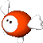
A cute monster that resembles a ball with wings and heart-shaped feet.
Has a tendency to be defeated by other monsters, which results in the attacking monster leveling up.
Appears around 1~20F of post-game dungeons, often creating Cave Mamels or Mid Chintalas on 1F of Road to the End.
Usually you'd want to defeat it before another monster has the chance to level up, but it can be used to gain more experience or capture higher level monsters for Monster Kingdom.
Runs away from Shiren, but attacks when there is nowhere else to run.
Has a tendency to be defeated by other monsters, which results in the attacking monster leveling up.
Appears around 1~20F of post-game dungeons, often creating Cave Mamels or Mid Chintalas on 1F of Road to the End.
Usually you'd want to defeat it before another monster has the chance to level up, but it can be used to gain more experience or capture higher level monsters for Monster Kingdom.
Runs away from Shiren, but attacks when there is nowhere else to run.
| Name | HP | ATK | DEF | EXP | Element | Sleep | Wake | Drop | Item | Sp | Notes |
|---|---|---|---|---|---|---|---|---|---|---|---|
| Snacky | 6 | 1 | 1 | 1 | Slow | 0% | 1 Tile | 1% | - | - | Runs away from Shiren. Other monsters prioritize Snacky over Shiren. |
Ally / Possession Staff:
| Name | Max Lv | HP+ | ATK+ | Max HP | Max ATK | Notes |
|---|---|---|---|---|---|---|
| Snacky | 50 | 1 | 1 | 56 | 51 | Ally: Monsters aim for Snacky rather than Shiren. Monsters will level up when they defeat an ally Snacky. Possession: Monsters aim for Snacky rather than Shiren. |
Tiny Phoenix (プチフェニックス)
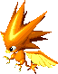
A bird monster that has a body made of fire.
Warps to monsters that have received damage and restores 50 HP.
Immune to fire attacks, but still takes damage from explosions.
Warps to monsters that have received damage and restores 50 HP.
Immune to fire attacks, but still takes damage from explosions.
| Name | HP | ATK | DEF | EXP | Element | Sleep | Wake | Drop | Item | Sp | Notes |
|---|---|---|---|---|---|---|---|---|---|---|---|
| Tiny Phoenix | 75 | 23 | 29 | 350 | Floating | 0% | High | 3% | - | 50% | Warps to a hurt monster within 10 tiles of Shiren and restores 50HP. Heals from afar if there isn't enough room to move. Special use rate increases to 75% if it doesn't warp. Immune to fire damage. |
Ally / Possession Staff:
| Name | Max Lv | HP+ | ATK+ | Max HP | Max ATK | Notes |
|---|---|---|---|---|---|---|
| Tiny Phoenix | 10 | 2 | 1 | 95 | 33 | Ally: Restores 50 HP to an ally within view who has taken damage. Possession: Special attack restores 50 HP to an ally adjacent to it. Cannot restore an enemy's HP. |
Escargon (エスカルゴン)
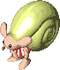
A small monster who hides inside a yellow shell. Capable of reflecting magic.
Warps in front of other monsters when Shiren tries to swing a staff at them.
You can work around this ability by swinging the staff when the target monster is directly next to you.
Warps in front of other monsters when Shiren tries to swing a staff at them.
You can work around this ability by swinging the staff when the target monster is directly next to you.
| Name | HP | ATK | DEF | EXP | Element | Sleep | Wake | Drop | Item | Sp | Notes |
|---|---|---|---|---|---|---|---|---|---|---|---|
| Escargon | 119 | 25 | 40 | 800 | - | 0% | High | 1% | - | - | Reflects staff magic. Warps in front of a monster and reflects the magic bolt if another monster is about to get hit by a staff. Cannot act during the next turn after warping. Cannot warp if there isn't space in front of the other monster. |
Ally / Possession Staff:
| Name | Max Lv | HP+ | ATK+ | Max HP | Max ATK | Notes |
|---|---|---|---|---|---|---|
| Escargon | 50 | 1 | 1 | 169 | 75 | Ally: Reflects staff magic. Warps in front of an ally and reflects magic if they are about to get hit by magic. Cannot act during the next turn after warping. Cannot warp if there isn't space in front of the ally. Possession: Reflects magic. |
Queen Spider (女王グモ)
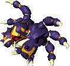
Boss of Shuten Trail Hard. Its special attack spawns 3 Armor Spiders.
Doesn't move when it appears as a boss, and uses its special no matter where Shiren is on the current floor.
Takes 200 damage from a pent-up-anger Surprise Pot, instantly defeating it.
Also appears inside the Shrine's Hidden Hole dungeon. (60F+)
Outside of the boss encounter, it will only use its special when Shiren is in front of it.
Doesn't move when it appears as a boss, and uses its special no matter where Shiren is on the current floor.
Takes 200 damage from a pent-up-anger Surprise Pot, instantly defeating it.
Also appears inside the Shrine's Hidden Hole dungeon. (60F+)
Outside of the boss encounter, it will only use its special when Shiren is in front of it.
| Name | HP | ATK | DEF | EXP | Element | Sleep | Wake | Drop | Item | Sp | Notes |
|---|---|---|---|---|---|---|---|---|---|---|---|
| Queen Spider | 170 | 30 | 30 | 200 | - | 0% | High | 0% | - | 15% | Special spawns 3 Armor Spiders on the current floor. |
Ally / Possession Staff:
Can only be captured 60F+ inside the Shrine's Hidden Hole dungeon.
Terrifyingly strong when maxed. Be careful around Gazers, since they have the ability to confuse Queen Spider.
Terrifyingly strong when maxed. Be careful around Gazers, since they have the ability to confuse Queen Spider.
| Name | Max Lv | HP+ | ATK+ | Max HP | Max ATK | Notes |
|---|---|---|---|---|---|---|
| Queen Spider | 120 | 5 | 3 | 770 | 390 | Ally: Spawns 3 ally Armor Spiders when an enemy is in front of it. Max number of ally Armor Spiders is 5. Possession: Can use its special even when there aren't enemies around. |
Armor Spider (ヨロイグモ)
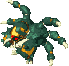
Monster that gets spawned by Queen Spider. No special abilities.
Not too difficult 1-on-1, but Queen Spider will endlessly spawn them, so you can end up getting swarmed.
Appears on their own in later dungeons, starting in Onigashima.
Not too difficult 1-on-1, but Queen Spider will endlessly spawn them, so you can end up getting swarmed.
Appears on their own in later dungeons, starting in Onigashima.
| Name | HP | ATK | DEF | EXP | Element | Sleep | Wake | Drop | Item | Sp | Notes |
|---|---|---|---|---|---|---|---|---|---|---|---|
| Armor Spider | 55 | 21 | 23 | 100 | - | 0% | High | 3% | - | - | Regular attacks only. |
Ally / Possession Staff:
| Name | Max Lv | HP+ | ATK+ | Max HP | Max ATK | Notes |
|---|---|---|---|---|---|---|
| Armor Spider | 50 | 1 | 1 | 105 | 71 | Regular attacks only. |
N'dubba (ンドゥバ)
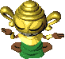
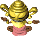
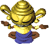
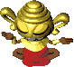
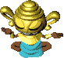
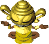
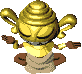
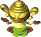
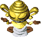
Monster that disguises itself as an item, and attacks when someone tries to pick it up.
It's possible to identify it by swinging a weapon that has the 識 seal toward a tile with an item.
N'dubba will vanish if the item limit has been reached for the current floor.
It's also possible to pick N'dubba up as an item under certain circumstances.
N'dubba ages as it levels up, with a maximum of 99 years old.
Each age has its own stats, and some age brackets have changes in movement speed.
One way to reduce the risk of collapsing from a surprise attack would be to reserve some HP before attempting to pick up items.
Monster Kingdom requires an N'dubba of every color for completion. The easiest way to capture them would be to search inside the Sealed Room dungeon, where the current floor number indicates the age of N'dubba that can be found on that floor. (ex: N'dubba 99yr = 99F)
Note that there's a bug related to swapping out N'dubba at Monster Kingdom.
It's possible to identify it by swinging a weapon that has the 識 seal toward a tile with an item.
N'dubba will vanish if the item limit has been reached for the current floor.
It's also possible to pick N'dubba up as an item under certain circumstances.
N'dubba ages as it levels up, with a maximum of 99 years old.
Each age has its own stats, and some age brackets have changes in movement speed.
One way to reduce the risk of collapsing from a surprise attack would be to reserve some HP before attempting to pick up items.
Monster Kingdom requires an N'dubba of every color for completion. The easiest way to capture them would be to search inside the Sealed Room dungeon, where the current floor number indicates the age of N'dubba that can be found on that floor. (ex: N'dubba 99yr = 99F)
Note that there's a bug related to swapping out N'dubba at Monster Kingdom.
| Name | HP | ATK | DEF | EXP | Element | Sleep | Wake | Drop | Item | Sp | Notes |
|---|---|---|---|---|---|---|---|---|---|---|---|
| N'dubba | 23 | 10 | 6 | 16 | - | - | - | 0% | - | - | Disguises itself as an item and attacks Shiren when he tries to pick it up. (Green: 1~19yr) |
| N'dubba 20yr | 67 | 29 | 25 | 35 | - | - | - | 0% | - | - | Same as N'dubba. (Pink: 20~29yr) |
| N'dubba 30yr | 81 | 39 | 35 | 20 | - | - | - | 0% | - | - | Same as N'dubba. (Blue: 30~59yr) |
| N'dubba 60yr | 100 | 86 | 45 | 20 | Fast (2x) | - | - | 0% | - | - | Same as N'dubba. (Red: 60~69yr) |
| N'dubba 70yr | 100 | 106 | 50 | 20 | Fast (2x) | - | - | 0% | - | - | Same as N'dubba. (Light Blue: 70~76yr) |
| N'dubba 77yr | 100 | 120 | 50 | 20 | Fast (2x) | - | - | 0% | - | - | Same as N'dubba. (Yellow: 77~87yr) |
| N'dubba 88yr | 100 | 130 | 50 | 4500 | - | - | - | 0% | - | - | Same as N'dubba. (Beige: 88~89yr) |
| N'dubba 90yr | 100 | 100 | 20 | 2500 | - | - | - | 0% | - | - | Same as N'dubba. (Light Green: 90~98yr) |
| N'dubba 99yr | 1 | 1 | 1 | 1 | Slow | - | - | 0% | - | - | Same as N'dubba. (White: 99yr) |
Ally / Possession Staff:
| Name | Max Lv | HP+ | ATK+ | Max HP | Max ATK | Notes |
|---|---|---|---|---|---|---|
| N'dubba | 15 | 1 | 1 | 38 | 25 | Special disguises itself as an item for 10 turns. Enemies won't attack it, and projectils will pass over it. Characters can't walk on top of it, so it can be used as a wall. |
| N'dubba 20yr | 38 | 1 | 1 | 105 | 67 | Same as N'dubba. |
| N'dubba 30yr | 48 | 1 | 1 | 129 | 87 | Same as N'dubba. |
| N'dubba 60yr | 42 | 1 | 1 | 142 | 128 | Same as N'dubba. |
| N'dubba 70yr | 32 | 1 | 1 | 132 | 138 | Same as N'dubba. |
| N'dubba 77yr | 14 | 1 | 1 | 114 | 134 | Same as N'dubba. |
| N'dubba 88yr | 3 | 1 | 1 | 103 | 133 | Same as N'dubba. |
| N'dubba 90yr | 1 | 1 | 1 | 101 | 101 | Same as N'dubba. |
| N'dubba 99yr | 0 | - | - | 1 | 1 | Same as N'dubba. |
Weapon
Kengo Family (ケンゴウ, イアイ, シハン)
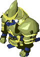
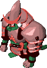
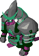
Monster that resembles a Samurai. The most disliked monster among player votes.
Its special attack flings Shiren or Asuka's equipment behind them with an iaigiri strike, including cursed equipment.
The only way to guarantee avoiding its special attack would be to either seal it or throw an Extinction Scroll at it, as Shiren 2 lacks bracelets that protect against having equipment disarmed.
Kengo doesn't have too high of an attack stat, so unequipping your shield can be a decent strategy.
You could also intentionally aim to have them disarm cursed equipment, but Iai and Shihan have very high attack, so you risk collapsing unless you pour water on them to lower their attack first.
Note that not even a Kaburasutegi+99 can defeat Shihan in a single hit, unless you've increased your strength.
Its special attack flings Shiren or Asuka's equipment behind them with an iaigiri strike, including cursed equipment.
The only way to guarantee avoiding its special attack would be to either seal it or throw an Extinction Scroll at it, as Shiren 2 lacks bracelets that protect against having equipment disarmed.
Kengo doesn't have too high of an attack stat, so unequipping your shield can be a decent strategy.
You could also intentionally aim to have them disarm cursed equipment, but Iai and Shihan have very high attack, so you risk collapsing unless you pour water on them to lower their attack first.
Note that not even a Kaburasutegi+99 can defeat Shihan in a single hit, unless you've increased your strength.
| Name | HP | ATK | DEF | EXP | Element | Sleep | Wake | Drop | Item | Sp | Notes |
|---|---|---|---|---|---|---|---|---|---|---|---|
| Kengo | 42 | 19 | 19 | 55 | Weapon | 40% | High | 0% | - | 25% | Special attack flings your equipped shield behind you, even if the shield is cursed. |
| Iai | 80 | 69 | 48 | 1450 | Weapon | 40% | High | 3% | Kengo's Katana | 25% | Same as Kengo, but also flings equipped weapons. |
| Shihan | 125 | 90 | 65 | 2250 | Weapon | 40% | High | 3% | Kengo's Katana | 20% | Same as Iai, but also flings equipped bracelets. |
Ally / Possession Staff:
Flings equipment from monsters. Great way to collect synthesis fodder for upgrade values or seals.
Shihan can fling bracelets as well, so you may be able to obtain valuable ones like Scout Bracelet.
Using its special attack on a monster with a fixed drop such as Minotaur's Axe isn't a 100% chance to obtain it, but instead has the same odds as its defeated drop rate.
Shihan can fling bracelets as well, so you may be able to obtain valuable ones like Scout Bracelet.
Using its special attack on a monster with a fixed drop such as Minotaur's Axe isn't a 100% chance to obtain it, but instead has the same odds as its defeated drop rate.
| Name | Max Lv | HP+ | ATK+ | Max HP | Max ATK | Notes |
|---|---|---|---|---|---|---|
| Kengo | 15 | 1 | 3 | 57 | 64 | Special attack flings a shield based on the dungeon's floor item table. Flings a Leather Shield if the dungeon doesn't have shields. |
| Iai | 15 | 1 | 3 | 95 | 114 | Same as Kengo, but also flings weapons. Flings a Club if the dungeon doesn't have weapons. |
| Shihan | 15 | 1 | 3 | 140 | 135 | Same as Iai, but also flings bracelets. Flings a No Control Bracelet if the dungeon doesn't have bracelets. |
Taurus Family (タウロス, ミノタウロス, メガタウロス)
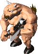
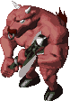
Powerful monster that carries an axe. Note that it doesn't appear in Power Houses.
Very high HP and attack, and can deal critical hits on top of its already strong attacks.
Taurus can only be seen by lowering Minotaur or Megataur's level with items such as an Unlucky Staff.
Its critical hits are guaranteed to hit, even if you have equipment that raises evasion.
Very high HP and attack, and can deal critical hits on top of its already strong attacks.
Taurus can only be seen by lowering Minotaur or Megataur's level with items such as an Unlucky Staff.
Its critical hits are guaranteed to hit, even if you have equipment that raises evasion.
| Name | HP | ATK | DEF | EXP | Element | Sleep | Wake | Drop | Item | Sp | Notes |
|---|---|---|---|---|---|---|---|---|---|---|---|
| Taurus | 130 | 70 | 60 | 2500 | Weapon | 40% | Low | 0% | - | 25% | Special attack is a critical hit that deals x1.3 damage. |
| Minotaur | 150 | 80 | 68 | 3000 | Weapon | 40% | Low | 10% | Minotaur's Axe | 25% | Special attack is a critical hit that deals x1.4 damage. |
| Megataur | 165 | 110 | 75 | 5000 | Weapon | 40% | Low | 15% | Minotaur's Axe | 25% | Special attack is a critical hit that deals x1.5 damage. |
Ally / Possession Staff:
| Name | Max Lv | HP+ | ATK+ | Max HP | Max ATK | Notes |
|---|---|---|---|---|---|---|
| Taurus | 10 | 1 | 4 | 140 | 110 | 25% chance to deal a critical hit that deals x1.3 damage. |
| Minotaur | 5 | 0 | 4 | 150 | 100 | Same as Taurus, but the critical hit deals x1.4 damage. |
| Megataur | 5 | 0 | 4 | 165 | 130 | Same as Taurus, but the critical hit deals x1.5 damage. |
Ashigarudon Family (足軽どん, 侍どん, 大将どん, 殿様どん)
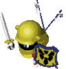
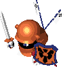
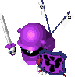
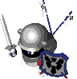
Monster that starts out as a weakling, but equips special shields as it levels up.
Samuraidon has a Counter Shield, Taishodon has an Echo Shield, and Tonosamadon has a Reflect Shield.
Note that these shields will never be dropped, even if you use Kengo's special attack.
Their stats aren't too high, but it's easy to forget what their shields reflect at different levels.
Samuraidon has a Counter Shield, Taishodon has an Echo Shield, and Tonosamadon has a Reflect Shield.
Note that these shields will never be dropped, even if you use Kengo's special attack.
Their stats aren't too high, but it's easy to forget what their shields reflect at different levels.
| Name | HP | ATK | DEF | EXP | Element | Sleep | Wake | Drop | Item | Sp | Notes |
|---|---|---|---|---|---|---|---|---|---|---|---|
| Ashigarudon | 10 | 5 | 5 | 6 | Weapon | 25% | High | 2% | - | - | Regular attacks only. |
| Samuraidon | 23 | 12 | 12 | 18 | Weapon | 25% | High | 1% | - | - | Reflects 25% of damage received back at attacker. |
| Taishodon | 31 | 16 | 19 | 38 | Weapon | 25% | High | 2% | - | - | Reflects magic, excluding scrolls. |
| Tonosamadon | 65 | 30 | 33 | 250 | Weapon | 25% | High | 4% | - | - | Reflects thrown items and projectiles. |
Ally / Possession Staff:
| Name | Max Lv | HP+ | ATK+ | Max HP | Max ATK | Notes |
|---|---|---|---|---|---|---|
| Ashigarudon | 10 | 2 | 4 | 30 | 45 | Regular attacks only. |
| Samuraidon | 10 | 2 | 4 | 43 | 52 | Reflects 25% of damage received back at attacker. |
| Taishodon | 10 | 2 | 4 | 51 | 56 | Reflects magic, excluding scrolls. |
| Tonosamadon | 10 | 2 | 4 | 85 | 70 | Reflects thrown items and projectiles. |
Throwing
Porky Family (デブータ, デブーチョ, デブートン)
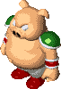
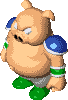
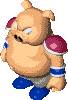
Monster that resembles a pig. Throws stones at Shiren from a distance.
It can use its special attack toward targets outside of view, unlike monsters such as Wolf Droid.
Doesn't attack if Shiren is inside a pot.
It can use its special attack toward targets outside of view, unlike monsters such as Wolf Droid.
Doesn't attack if Shiren is inside a pot.
| Name | HP | ATK | DEF | EXP | Element | Sleep | Wake | Drop | Item | Sp | Notes |
|---|---|---|---|---|---|---|---|---|---|---|---|
| Porky | 70 | 15 | 26 | 80 | - | 40% | High | 15% | Porky Stone | 45% | Throws a stone that homes in on a target within 2 tiles. |
| Porkchop | 105 | 55 | 60 | 1800 | - | 40% | High | 20% | Porky Stone | 25% | Same as Porky, but 5 tiles. |
| Porkton | 120 | 60 | 63 | 2150 | - | 40% | High | 20% | Porky Stone | 12% | Same as Porky, but 10 tiles. |
Ally / Possession Staff:
| Name | Max Lv | HP+ | ATK+ | Max HP | Max ATK | Notes |
|---|---|---|---|---|---|---|
| Porky | 20 | 1 | 2 | 90 | 55 | |
| Porkchop | 20 | 1 | 2 | 125 | 95 | |
| Porkton | 20 | 1 | 2 | 140 | 100 |
Horse Ronin Family (馬武者, 荒馬ザムライ, あばれ馬将軍, 乱れ馬王)
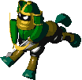
Monster that resembles a centaur. Shoots silver arrows.
Also performs regular attacks, unlike the Bow Boy family.
Silver arrows pierce through targets, so it may defeat other monsters who are lined up with Shiren and level up.
The stat difference between Horse Ronin and Horse Samurai is quite large, so be careful of where you stand.
Also performs regular attacks, unlike the Bow Boy family.
Silver arrows pierce through targets, so it may defeat other monsters who are lined up with Shiren and level up.
The stat difference between Horse Ronin and Horse Samurai is quite large, so be careful of where you stand.
| Name | HP | ATK | DEF | EXP | Element | Sleep | Wake | Drop | Item | Sp | Notes |
|---|---|---|---|---|---|---|---|---|---|---|---|
| Horse Ronin | 26 | 12 | 13 | 21 | - | 40% | Low | 8% | - | 50% | Special attack shoots silver arrows. |
| Horse Samurai | 79 | 35 | 39 | 800 | - | 25% | High | 8% | - | 60% | Same as Horse Ronin. |
| Horse Shogun | 90 | 45 | 58 | 1950 | - | 25% | High | 8% | - | 60% | Same as Horse Ronin. |
| Horse Emperor | 110 | 59 | 61 | 3100 | - | 25% | High | 8% | - | 60% | Same as Horse Ronin. |
Ally / Possession Staff:
| Name | Max Lv | HP+ | ATK+ | Max HP | Max ATK | Notes |
|---|---|---|---|---|---|---|
| Horse Ronin | 20 | 1 | 1 | 46 | 32 | Special attack shoots silver arrows. |
| Horse Samurai | 20 | 1 | 1 | 99 | 55 | Same as Horse Ronin. |
| Horse Shogun | 20 | 1 | 1 | 110 | 65 | Same as Horse Ronin. |
| Horse Emperor | 20 | 2 | 2 | 150 | 99 | Same as Horse Ronin. |
Tiger Tosser Family (タイガーウッホ, タイガーウホホ, タイガーウホーン)
Monster that resembles a tiger. Capable of throwing Shiren and other monsters with its special attack.
Higher levels can toss Shiren into monster houses, so don't take them on too lightly.
Higher levels can toss Shiren into monster houses, so don't take them on too lightly.
| Name | HP | ATK | DEF | EXP | Element | Sleep | Wake | Drop | Item | Sp | Notes |
|---|---|---|---|---|---|---|---|---|---|---|---|
| Tiger Tosser | 33 | 16 | 15 | 35 | - | 35% | Low | 16% | - | 50% | Throws monsters at Shiren, dealing 5 damage. Also throws Shiren to traps within view. Throw range: 5 tiles. |
| Tiger Hurler | 40 | 26 | 27 | 65 | - | 35% | High | 16% | - | 50% | Same as Tiger Tosser. Also throws Shiren to hidden traps and into Monster Houses. Throw range: 10 tiles. |
| Tiger Chucker | 72 | 62 | 60 | 2400 | - | 35% | High | 16% | - | 50% | Same as Tiger Hurler. Throw range: 20 tiles. |
Ally / Possession Staff:
| Name | Max Lv | HP+ | ATK+ | Max HP | Max ATK | Notes |
|---|---|---|---|---|---|---|
| Tiger Tosser | 15 | 3 | 2 | 78 | 46 | Can throw statues as well. |
| Tiger Hurler | 15 | 3 | 2 | 85 | 56 | Same as Tiger Tosser. |
| Tiger Chucker | 15 | 3 | 2 | 117 | 92 | Same as Tiger Tosser. |
Magic
King Tusker Family (パ王, パオパ王, パオパ王ーン)
Incarnation of an elephant that wields magic. Swings various staves at Shiren based on its level.
Possible to reflect its magic with an Echo Shield, and it sometimes drops its staff when defeated.
Monarch Tusker's Slow Staff and Emperor Tusker's Quarter Staff are particularly dangerous.
If you get hit by a Slow Staff while already slowed, you will be paralyzed and unable to act for 3 turns.
It can slow you again while paralyzed, creating an endless loop until you collapse, so don't be stingy with items.
Possible to reflect its magic with an Echo Shield, and it sometimes drops its staff when defeated.
Monarch Tusker's Slow Staff and Emperor Tusker's Quarter Staff are particularly dangerous.
If you get hit by a Slow Staff while already slowed, you will be paralyzed and unable to act for 3 turns.
It can slow you again while paralyzed, creating an endless loop until you collapse, so don't be stingy with items.
| Name | HP | ATK | DEF | EXP | Element | Sleep | Wake | Drop | Item | Sp | Notes |
|---|---|---|---|---|---|---|---|---|---|---|---|
| King Tusker | 55 | 20 | 19 | 47 | Magic | 25% | Low | 3% | Seal Staff | 30% | Special attack swings a Seal Staff. |
| Monarch Tusker | 66 | 32 | 26 | 100 | Magic | 25% | Low | 3% | Slow Staff | 35% | Special attack swings a Slow Staff. |
| Emperor Tusker | 130 | 98 | 70 | 3500 | Magic | 25% | High | 10% | Quarter Staff | 23% | Special attack swings a Quarter Staff. |
Ally / Possession Staff:
| Name | Max Lv | HP+ | ATK+ | Max HP | Max ATK | Notes |
|---|---|---|---|---|---|---|
| King Tusker | 15 | 2 | 3 | 85 | 65 | Special attack swings a Seal Staff. |
| Monarch Tusker | 10 | 2 | 3 | 86 | 62 | Special attack swings a Slow Staff. |
| Emperor Tusker | 5 | 2 | 3 | 140 | 113 | Special attack swings a Quarter Staff. |
Bat Kangaroo Family (バットカンガルー, エビルカンガルー, デビルカンガルー)
Monster that resembles a kangaroo with bat wing-like ears.
A support monster that swings various staves at other monsters to aid them in battle.
Swings its staff at other monsters even if Shiren isn't in the same room.
Evil Kangaroo sometimes defeats Ghost type monsters with its Heal Staff, resulting in a Devil Kangaroo.
Devil Kangaroo is truly a devilish monster as its name implies in Asuka Kenzan and GB2/DS2 due to swinging a staff that both doubles or triples movement speed and increases special use rate to 100%, but isn't much of a threat in Shiren 2 since it only swings an Invisible Staff. Therefore, the scariest one of the group is actually Bat Kangaroo, who increases movement speed of other monsters.
A support monster that swings various staves at other monsters to aid them in battle.
Swings its staff at other monsters even if Shiren isn't in the same room.
Evil Kangaroo sometimes defeats Ghost type monsters with its Heal Staff, resulting in a Devil Kangaroo.
Devil Kangaroo is truly a devilish monster as its name implies in Asuka Kenzan and GB2/DS2 due to swinging a staff that both doubles or triples movement speed and increases special use rate to 100%, but isn't much of a threat in Shiren 2 since it only swings an Invisible Staff. Therefore, the scariest one of the group is actually Bat Kangaroo, who increases movement speed of other monsters.
| Name | HP | ATK | DEF | EXP | Element | Sleep | Wake | Drop | Item | Sp | Notes |
|---|---|---|---|---|---|---|---|---|---|---|---|
| Bat Kangaroo | 44 | 16 | 17 | 52 | Magic | 25% | High | 8% | Swift Staff | 40% | Swings a Swift Staff at other monsters. |
| Evil Kangaroo | 55 | 24 | 20 | 60 | Magic | 25% | High | 8% | Heal Staff | 40% | Swings a Heal Staff at other monsters. |
| Devil Kangaroo | 65 | 37 | 40 | 450 | Magic | 25% | High | 8% | Invisible Staff | 20% | Swings an Invisible Staff at other monsters. |
Ally / Possession Staff:
| Name | Max Lv | HP+ | ATK+ | Max HP | Max ATK | Notes |
|---|---|---|---|---|---|---|
| Bat Kangaroo | 20 | 3 | 1 | 104 | 36 | Special attack swings a Swift Staff. |
| Evil Kangaroo | 20 | 3 | 1 | 115 | 44 | Special attack swings a Heal Staff. |
| Devil Kangaroo | 20 | 3 | 1 | 125 | 57 | Special attack swings an Invisible Staff. |
Sheep Priest Family (ヒツジ神官, ヤギ司祭, ガゼル教皇)
Monster that resembles a sheep dressed like a priest. Casts spells that temporarily reduce Shiren's stats.
Level 1 halves strength, level 2 halves max HP, and level 3 halves level.
The spell effects are stronger at higher levels, but the spells don't last as long.
The number of remaining turns doesn't get extended if the spell is cast again while under the effect of the spell.
All of its spells can be reflected with an Echo Shield. Sheep Priest's spells can also be blocked by a Salty Bracelet, and Gazelle Pope's spells can be blocked by a Level Lock Bracelet.
Level 1 halves strength, level 2 halves max HP, and level 3 halves level.
The spell effects are stronger at higher levels, but the spells don't last as long.
The number of remaining turns doesn't get extended if the spell is cast again while under the effect of the spell.
All of its spells can be reflected with an Echo Shield. Sheep Priest's spells can also be blocked by a Salty Bracelet, and Gazelle Pope's spells can be blocked by a Level Lock Bracelet.
| Name | HP | ATK | DEF | EXP | Element | Sleep | Wake | Drop | Item | Sp | Notes |
|---|---|---|---|---|---|---|---|---|---|---|---|
| Sheep Priest | 27 | 14 | 14 | 32 | Magic | 25% | High | 16% | - | 30% | Special attack halves max strength for 30 turns. Can be nullified with an Echo Shield or Salty Bracelet. |
| Goat Pastor | 29 | 17 | 16 | 48 | Magic | 40% | Low | 16% | - | 30% | Special attack halves max HP for 25 turns. Current HP will be doubled when the spell wears off. |
| Gazelle Pope | 87 | 55 | 55 | 2200 | Magic | 25% | High | 16% | - | 40% | Special attack halves level for 20~30 turns. Can be nullified with an Echo Shield or Level Lock Bracelet. HP damage as a result of halved level remains when the spell wears off. |
Ally / Possession Staff:
| Name | Max Lv | HP+ | ATK+ | Max HP | Max ATK | Notes |
|---|---|---|---|---|---|---|
| Sheep Priest | 10 | 3 | 3 | 57 | 44 | Special attack halves attack for 25 turns. |
| Goat Pastor | 10 | 3 | 3 | 59 | 47 | Special attack halves max HP for 25 turns. |
| Gazelle Pope | 10 | 3 | 3 | 117 | 85 | Special attack halves level for 20~30 turns. |
Item Change
Nigiri Trainee Family (にぎりみならい, にぎりへんげ, にぎり親方, にぎりもとじめ)
Monster with a large mouth and a riceball-shaped head. Transforms items or Shiren into riceballs.
This ability can be disasterous if something like a Storage Pot full of important items gets transformed into a riceball. However, it can also be used as a way to transform extra items such as Wooden Arrows into riceballs to stock up on food sources or increase max fullness.
If Shiren is turned into a riceball, his attack and defense stats from equipment will be 0 until he transforms back.
Shiren 2 is more forgiving in that you won't instantly collapse from stepping on a Spoil Trap or receiving fire/explosion damage while turned into a riceball.
All Nigiri monsters can be instantly defeated by throwing a riceball, though the throw can still miss like other items.
Equipped items will never be turned into Large Riceballs.
It will only use regular attacks when there is nothing in your inventory that can be turned into riceballs, or if Shiren is already turned into a riceball.
This ability can be disasterous if something like a Storage Pot full of important items gets transformed into a riceball. However, it can also be used as a way to transform extra items such as Wooden Arrows into riceballs to stock up on food sources or increase max fullness.
If Shiren is turned into a riceball, his attack and defense stats from equipment will be 0 until he transforms back.
Shiren 2 is more forgiving in that you won't instantly collapse from stepping on a Spoil Trap or receiving fire/explosion damage while turned into a riceball.
All Nigiri monsters can be instantly defeated by throwing a riceball, though the throw can still miss like other items.
Equipped items will never be turned into Large Riceballs.
It will only use regular attacks when there is nothing in your inventory that can be turned into riceballs, or if Shiren is already turned into a riceball.
| Name | HP | ATK | DEF | EXP | Element | Sleep | Wake | Drop | Item | Sp | Notes |
|---|---|---|---|---|---|---|---|---|---|---|---|
| Nigiri Trainee | 12 | 5 | 6 | 6 | - | 25% | High | 5% | - | - | Regular Attacks only. |
| Nigiri Morph | 28 | 12 | 11 | 28 | - | 50% | Low | 2% | - | 25% | Transforms Shiren or Mamo's items into Large Riceballs. Cannot transform equipped items. |
| Nigiri Boss | 55 | 24 | 20 | 65 | - | 40% | High | 4% | - | 25% | Transforms a target into a Riceball. |
| Nigiri Master | 70 | 55 | 40 | 1600 | - | 40% | High | 2% | - | 25% | Transforms a target into a Riceball. Uses Nigiri Morph's special attack when Shiren or Mamo are currently transformed into a Riceball. |
Ally / Possession Staff:
No special attack, but monsters defeated by it have a higher chance to drop riceballs, based on the Nigiri monster's level.
| Name | Max Lv | HP+ | ATK+ | Max HP | Max ATK | Notes |
|---|---|---|---|---|---|---|
| Nigiri Trainee | 10 | 1 | 3 | 22 | 35 | Regular Attacks only. |
| Nigiri Morph | 10 | 1 | 3 | 38 | 42 | Defeated enemies have a 50% chance to drop a Riceball. |
| Nigiri Boss | 10 | 2 | 3 | 75 | 54 | Defeated enemies always drop a Riceball. |
| Nigiri Master | 10 | 2 | 3 | 90 | 85 | Defeated enemies always drop a Large Riceball. |
Mixer Family (マゼルン, マゼモン, マゼゴン)
Monster that swallows thrown items, and if compatible, synthesizes them.
Unlike Synthesis Pots, it can synthesize different category items together such as a weapon + grass.
Each item it swallows powers it up, with the formula being: current stat x (1.1 + (0.05 x number of items))
It will drop the swallowed items when tripped or defeated.
Note that making it trip won't reset the number of swallows.
Higher levels can swallow more items. It won't swallow thrown items with piercing properties.
Checking for the presence of Pierce Statues is recommended before throwing items.
Swallows items even when it's sleeping, but won't swallow items if sealed.
Also swallows traps, so for example you could use a Knockback Staff to have it swallow a Pitfall, lead it into a shop, and then defeat it to make an easy exit inside the shop for stealing purposes.
Mixergon found in Road to the End (50~80F) could actually be a Copycat Mask family monster, so you may want to throw an unneeded item first to check.
Unlike Synthesis Pots, it can synthesize different category items together such as a weapon + grass.
Each item it swallows powers it up, with the formula being: current stat x (1.1 + (0.05 x number of items))
It will drop the swallowed items when tripped or defeated.
Note that making it trip won't reset the number of swallows.
Higher levels can swallow more items. It won't swallow thrown items with piercing properties.
Checking for the presence of Pierce Statues is recommended before throwing items.
Swallows items even when it's sleeping, but won't swallow items if sealed.
Also swallows traps, so for example you could use a Knockback Staff to have it swallow a Pitfall, lead it into a shop, and then defeat it to make an easy exit inside the shop for stealing purposes.
Mixergon found in Road to the End (50~80F) could actually be a Copycat Mask family monster, so you may want to throw an unneeded item first to check.
| Name | HP | ATK | DEF | EXP | Element | Sleep | Wake | Drop | Item | Sp | Notes |
|---|---|---|---|---|---|---|---|---|---|---|---|
| Mixer | 32 | 19 | 16 | 45 | - | 45% | Low | 1% | - | - | Swallows up to 2 thrown items and synthesizes them. |
| Mixermon | 50 | 25 | 21 | 58 | - | 40% | Low | 1% | - | - | Swallows up to 3 thrown items and synthesizes them. |
| Mixergon | 121 | 48 | 52 | 2500 | - | 40% | Low | 1% | - | - | Swallows up to 4 thrown items and synthesizes them. |
Ally / Possession Staff:
| Name | Max Lv | HP+ | ATK+ | Max HP | Max ATK | Notes |
|---|---|---|---|---|---|---|
| Mixer | 5 | 5 | 5 | 57 | 44 | Ally: Swallows up to 2 thrown items and synthesizes them. Swallowed items will vanish if returned to its pot. Possession: Swallows up to 2 items on the ground and synthesizes them. Also swallows thrown items. |
| Mixermon | 5 | 5 | 5 | 75 | 50 | Same as Mixer, but swallows up to 3 items. |
| Mixergon | 5 | 5 | 5 | 146 | 73 | Same as Mixer, but swallows up to 4 items. |
Straw Voodoll Family (ワラドール, クギワラドール, ゴスンドール)
Monster that resembles a Voodoo Doll. Its special attack curses equipment.
Its curses can be blocked by a Holy Shield or the 祓 seal. (from Holy Shield or Purify Scroll)
Curses are treated as seals in Shiren 2, so it can only curse equipment if there is an open seal slot.
Levels 1 and 2 only use its special attack against Shiren or Asuka, while level 3 also uses it on Mamo.
Its curses can be blocked by a Holy Shield or the 祓 seal. (from Holy Shield or Purify Scroll)
Curses are treated as seals in Shiren 2, so it can only curse equipment if there is an open seal slot.
Levels 1 and 2 only use its special attack against Shiren or Asuka, while level 3 also uses it on Mamo.
| Name | HP | ATK | DEF | EXP | Element | Sleep | Wake | Drop | Item | Sp | Notes |
|---|---|---|---|---|---|---|---|---|---|---|---|
| Straw Voodoll | 25 | 13 | 15 | 14 | - | 25% | Low | 4% | - | 19% | Special attack curses equipped shields. |
| Nailed Voodoll | 80 | 42 | 50 | 800 | - | 25% | High | 2% | - | 25% | Special attack curses all equipped items. |
| Spiked Voodoll | 100 | 66 | 54 | 1650 | - | 25% | High | 2% | - | 15% | Special attack curses all equipment in inventory. Cannot curse items inside pots. |
Ally / Possession Staff:
No special attack, but using a Possession Staff on a Voodoll monster will instantly remove curses.
Pretty strong as an ally thanks to a higher growth limit.
Pretty strong as an ally thanks to a higher growth limit.
| Name | Max Lv | HP+ | ATK+ | Max HP | Max ATK | Notes |
|---|---|---|---|---|---|---|
| Straw Voodoll | 50 | 2 | 1 | 125 | 63 | Ally: Regular attacks only. Possession: Removes curse from equipped shield. |
| Nailed Voodoll | 50 | 2 | 1 | 180 | 92 | Ally: Regular attacks only. Possession: Removes curses from all equipped items. |
| Spiked Voodoll | 50 | 2 | 1 | 200 | 116 | Ally: Regular attacks only. Possession: Removes curses from all equipment in inventory. Cannoy remove curses from items inside pots. |
Weather Doll Family (ケロぼうず, ケロケロぼうず, ジャノメぼうず, ドシャブリぼうず)
Monster that resembles a Teru Teru Bozu with an umbrella.
Creates a rain cloud that lowers equipment upgrade values.
Sometimes uses its special attack even if you don't have anything equipped.
Level 1 only uses regular attacks, and levels 2 and 3 specials can be blocked by a 金 seal.
However, level 4 has a powerful ability to tear off synthesis seals.
It prioritizes the removal of a red 金 seal (Plating Scroll), so you can use a red 金 seal instead of a blue one to serve as a buffer to protect other seals.
Creates a rain cloud that lowers equipment upgrade values.
Sometimes uses its special attack even if you don't have anything equipped.
Level 1 only uses regular attacks, and levels 2 and 3 specials can be blocked by a 金 seal.
However, level 4 has a powerful ability to tear off synthesis seals.
It prioritizes the removal of a red 金 seal (Plating Scroll), so you can use a red 金 seal instead of a blue one to serve as a buffer to protect other seals.
| Name | HP | ATK | DEF | EXP | Element | Sleep | Wake | Drop | Item | Sp | Notes |
|---|---|---|---|---|---|---|---|---|---|---|---|
| Weather Doll | 6 | 6 | 6 | 5 | Floating | 25% | High | 0% | - | - | Regular Attacks only. |
| Rainy Doll | 20 | 11 | 14 | 30 | Floating | 25% | High | 0% | - | 20% | Special attack lowers equipped sword's upgrade value by 1. |
| Stormy Doll | 65 | 20 | 21 | 70 | Floating | 25% | High | 0% | - | 25% | Special attack lowers equipped sword or shield's upgrade value by 1. |
| Monsoon Doll | 85 | 46 | 50 | 1450 | Floating | 25% | High | 8% | - | 18% | Special attack tears off a synthesis seal. Prioritizes removing a red 金 seal, and lowers upgrade value by 1 when tearing it off. Doesn't tear off seals with negative effects. (Sword: 呪, 捨, 不, 超; Shield: 呪, 捨, 重, 銀, 不, 超, 飯) Lowers upgrade value by 1 if there are no removable seals. |
Ally / Possession Staff:
Monsoon Doll ends up being very strong thanks to a high growth limit, and can also seal enemies.
It's not the brightest, however, as it sometimes wastes turns by trying to seal an enemy that is already sealed.
It's not the brightest, however, as it sometimes wastes turns by trying to seal an enemy that is already sealed.
| Name | Max Lv | HP+ | ATK+ | Max HP | Max ATK | Notes |
|---|---|---|---|---|---|---|
| Weather Doll | 10 | 5 | 2 | 56 | 26 | Regular Attacks only. |
| Rainy Doll | 10 | 5 | 2 | 70 | 31 | Special attack lowers a target's defense by 35%. |
| Stormy Doll | 10 | 5 | 2 | 115 | 40 | Special attack lowers a target's defense to 0. |
| Monsoon Doll | 50 | 2 | 2 | 185 | 146 | Special attack seals a target. |
Stealing
Zalokleft Family (ぬすっトド, みどりトド, アイアントド)
Monster resembling a small walrus or sea lion that covers its head with a piece of cloth.
Steals an item that is on the ground or from Shiren's inventory, and then warps away.
Runs away from Shiren after stealing an item.
Higher levels can divide when receiving damage, creating a copy of itself.
Iron Zaloklefts can steal equipped items, so you may want to place an unneeded item on the ground if one is next to you to avoid losing your equipment. However, they don't have much HP, so you could try to defeat it in one hit.
Only appears in Underwater Houses inside the Road to the End dungeon.
Steals an item that is on the ground or from Shiren's inventory, and then warps away.
Runs away from Shiren after stealing an item.
Higher levels can divide when receiving damage, creating a copy of itself.
Iron Zaloklefts can steal equipped items, so you may want to place an unneeded item on the ground if one is next to you to avoid losing your equipment. However, they don't have much HP, so you could try to defeat it in one hit.
Only appears in Underwater Houses inside the Road to the End dungeon.
| Name | HP | ATK | DEF | EXP | Element | Sleep | Wake | Drop | Item | Sp | Notes |
|---|---|---|---|---|---|---|---|---|---|---|---|
| Zalokleft | 15 | 0 | 10 | 12 | Amphibious | 100% | 3 Tiles | 100% | - | 50% | Steals an item on the ground or from Shiren's inventory and warps away. Runs away from Shiren after warping. Prioritizes stealing the last item to fall on the ground over Shiren. Never attacks unless sealed. |
| Green Zalokleft | 20 | 0 | 30 | 13 | Amphibious | 100% | 3 Tiles | 100% | - | 40% | Same as Zalokleft. 30% chance to divide when receiving damage. |
| Iron Zalokleft | 36 | 0 | 55 | 14 | Amphibious | 100% | 3 Tiles | 100% | - | 30% | Same as Zalokleft, but also steals equipped items. Prioritizes Shiren over items on the ground. 25% chance to divide when receiving damage. |
Ally / Possession Staff:
| Name | Max Lv | HP+ | ATK+ | Max HP | Max ATK | Notes |
|---|---|---|---|---|---|---|
| Zalokleft | 50 | 2 | 0 | 115 | 1 | Ally: Drops the item it stole when returning to its pot. Possession: Special places a stolen item in front of it. |
| Green Zalokleft | 50 | 2 | 0 | 120 | 1 | Same as Zalokleft. |
| Iron Zalokleft | 50 | 2 | 0 | 136 | 1 | Same as Zalokleft. |
Gamarra Family (ガマラ, ガマグッチ, ガマゴン)
Monster that looks like a clasped purse.
Steals Gitan from Shiren, and then runs away at double speed.
Always drops Gitan when defeated, even if it didn't steal any from Shiren.
Moves toward Gitan if it sees some on the floor, and then sits on top of it.
Doesn't perform regular attacks unless it's sealed.
Steals Gitan from Shiren, and then runs away at double speed.
Always drops Gitan when defeated, even if it didn't steal any from Shiren.
Moves toward Gitan if it sees some on the floor, and then sits on top of it.
Doesn't perform regular attacks unless it's sealed.
| Name | HP | ATK | DEF | EXP | Element | Sleep | Wake | Drop | Item | Sp | Notes |
|---|---|---|---|---|---|---|---|---|---|---|---|
| Gamarra | 11 | 0 | 29 | 6 | - | 0% | 1 Tile | 100% | Gitan | 70% | Steals 30~2000 Gitan from Shiren and warps away. Runs away from Shiren at double speed after stealing. Prioritzes standing on top of Gitan if there is Gitan on the ground. Never attacks unless sealed. |
| Gamagucci | 16 | 0 | 35 | 25 | - | 0% | 1 Tile | 100% | Gitan | 80% | Same as Gamarra. |
| Gamagon | 40 | 0 | 65 | 300 | - | 0% | 1 Tile | 100% | Gitan | 25% | Same as Gamarra, but drops Gitan equal to 3 times floor amount. (max: 2000) |
Ally / Possession Staff:
| Name | Max Lv | HP+ | ATK+ | Max HP | Max ATK | Notes |
|---|---|---|---|---|---|---|
| Gamarra | 50 | 2 | 0 | 111 | 1 | Steals 30~2000 Gitan from a target and warps. Picks it up and warps if it moves on top of Gitan. Can store a max of 5000 Gitan. Drops its Gitan when returning to its pot. |
| Gamagucci | 50 | 2 | 0 | 116 | 1 | Same as Gamarra, but can store up to 10,000 Gitan. |
| Gamagon | 50 | 2 | 0 | 140 | 1 | Same as Gamarra, but can store up to 20,000 Gitan. |
Gyadon Family (ギャドン, ギャイラス, ギャンドラー)
Monster resembling a pterodactyl.
Plucks items from Shiren's inventory and modifies them in negative ways.
Plucked items will fall to the ground beneath Gyadon.
Also performs regular attacks, unlike other monsters that steal from Shiren.
Uses its special attack against Asuka and Mamo as well.
Gyandora is particularly bad, because it can reduce synthesis slots on equipment (including equipped items), or make items in pots vanish while reducing their size at the same time.
Its plucking special attack can be blocked using a Walrus Shield.
Appears in Magic Houses, despite not being a magic type monster.
Plucks items from Shiren's inventory and modifies them in negative ways.
Plucked items will fall to the ground beneath Gyadon.
Also performs regular attacks, unlike other monsters that steal from Shiren.
Uses its special attack against Asuka and Mamo as well.
Gyandora is particularly bad, because it can reduce synthesis slots on equipment (including equipped items), or make items in pots vanish while reducing their size at the same time.
Its plucking special attack can be blocked using a Walrus Shield.
Appears in Magic Houses, despite not being a magic type monster.
| Name | HP | ATK | DEF | EXP | Element | Sleep | Wake | Drop | Item | Sp | Notes |
|---|---|---|---|---|---|---|---|---|---|---|---|
| Gyadon | 40 | 23 | 17 | 90 | Floating | 25% | High | 1% | - | 50% | Plucks a staff from Shiren's inventory and lowers its use count by 1. Cannot pluck staves inside pots. If the tile below Gyadon is a void, the item will be lost. |
| Gyairas | 65 | 39 | 45 | 230 | Floating | 25% | High | 3% | - | 25% | Same as Gyadon. Also plucks pots, lowering their size by 1 if they aren't full. |
| Gyandora | 86 | 60 | 58 | 500 | Floating | 25% | High | 1% | - | 16% | Same as Gyairas, but also plucks full pots, lowering the pot's size by 1 and making the item in that slot vanish. Can also pluck equipment, lowering synthesis seal slots by 1 and tearing off a seal. |
Ally / Possession Staff:
It can only perform regular attacks as an ally, despite having such an annoying ability as an enemy.
| Name | Max Lv | HP+ | ATK+ | Max HP | Max ATK | Notes |
|---|---|---|---|---|---|---|
| Gyadon | 20 | 1 | 1 | 60 | 43 | Regular attacks only. |
| Gyairas | 20 | 1 | 1 | 85 | 59 | Same as Gyadon. |
| Gyandora | 20 | 1 | 1 | 106 | 80 | Same as Gyadon. |
Dragon
Dragon Family (ドラゴン, スカイドラゴン, アークドラゴン)
Dragon monster that can breathe fire to deal damage from a distance.
The flame never misses, and deals a fixed amount of damage. Higher levels have greater range.
A Dragon Shield (竜) or the 火 seal will reduce the amount of damage you take from fire attacks.
It's often asleep when it spawns, and has a high item drop rate.
Archdragon's ability to breathe fire from anywhere on the current floor is particularly mean, and the monster can appear as early as 30F in the Road to the End dungeon. You'll want to keep some healing items on hand if possible in case you encounter one.
The flame never misses, and deals a fixed amount of damage. Higher levels have greater range.
A Dragon Shield (竜) or the 火 seal will reduce the amount of damage you take from fire attacks.
It's often asleep when it spawns, and has a high item drop rate.
Archdragon's ability to breathe fire from anywhere on the current floor is particularly mean, and the monster can appear as early as 30F in the Road to the End dungeon. You'll want to keep some healing items on hand if possible in case you encounter one.
| Name | HP | ATK | DEF | EXP | Element | Sleep | Wake | Drop | Item | Sp | Notes |
|---|---|---|---|---|---|---|---|---|---|---|---|
| Dragon | 80 | 37 | 38 | 350 | Dragon | 40% | Low | 60% | - | 50% | Breathes fire toward a target on a straight line, dealing 20 damage. |
| Sky Dragon | 85 | 45 | 43 | 450 | Dragon | 50% | Low | 65% | - | 25% | Breathes fire that deals 30 damage to a taget within Sky Dragon's view. |
| Archdragon | 110 | 55 | 55 | 1300 | Dragon | 60% | Low | 70% | - | 12% | Breathes fire that deals 35 damage to a target on the current floor, including targets inside walls. Fire can also hit targets inside walls. |
Ally / Possession Staff:
| Name | Max Lv | HP+ | ATK+ | Max HP | Max ATK | Notes |
|---|---|---|---|---|---|---|
| Dragon | 30 | 2 | 2 | 140 | 97 | Breathes fire toward a target on a straight line, dealing 20 damage. |
| Sky Dragon | 25 | 2 | 2 | 135 | 95 | Breathes fire that deals 30 damage to a target within view. |
| Archdragon | 20 | 2 | 2 | 150 | 95 | Ally: Breathes fire that deals 35 damage to a target within view. Possession: Breathes fire that deals 35 damage to a target on the current floor, including targets inside walls. |
Shaaga Family (シャーガ, ナシャーガ, ラシャーガ)
Snake-like monster with four arms. Higher levels attack multiple times during the same turn.
The number of attacks doesn't change, even if its movement increases to double or triple speed.
However, sealing it will remove this limit, so a double speed Shaaga would be able to attack twice.
The number of attacks doesn't change, even if its movement increases to double or triple speed.
However, sealing it will remove this limit, so a double speed Shaaga would be able to attack twice.
| Name | HP | ATK | DEF | EXP | Element | Sleep | Wake | Drop | Item | Sp | Notes |
|---|---|---|---|---|---|---|---|---|---|---|---|
| Shaaga | 37 | 19 | 18 | 35 | Weapon Dragon |
30% | Low | 16% | - | - | Attacks 1 time, regardless of movement speed changes. |
| Nashaaga | 85 | 36 | 50 | 1150 | Weapon Dragon |
30% | High | 8% | - | - | Attacks 2 times, regardless of movement speed changes. |
| Lashaaga | 100 | 58 | 63 | 1500 | Weapon Dragon |
30% | High | 8% | - | - | Attacks 3 times, regardless of movement speed changes. |
Ally / Possession Staff:
Possession allows for a greater number of attacks than when it's encountered as an enemy.
| Name | Max Lv | HP+ | ATK+ | Max HP | Max ATK | Notes |
|---|---|---|---|---|---|---|
| Shaaga | 15 | 1 | 3 | 52 | 64 | Ally: Attacks 1 time, regardless of movement speed changes. Possession: Attacks 3 times in a row. |
| Nashaaga | 10 | 1 | 3 | 95 | 66 | Ally: Attacks 2 times, regardless of movement speed changes. Possession: Attacks 4 times in a row. |
| Lashaaga | 5 | 1 | 3 | 105 | 73 | Ally: Attacks 3 times, regardless of movement speed changes. Possession: Attacks 5 times in a row. |
Bone Dragon Family (ボーンドラゴン, スカルドラゴン, ガルムドラゴン)
Monster consisting of dragon bones. Has high stats to make up for the lack of a special attack.
The only monster family to have 2 weaknesses, since it's both Ghost and Dragon type.
Easily defeated by weapons that have both seals from Ghost Sickle and Dragon Killer.
Bone Dragon has a higher item drop rate.
The only monster family to have 2 weaknesses, since it's both Ghost and Dragon type.
Easily defeated by weapons that have both seals from Ghost Sickle and Dragon Killer.
Bone Dragon has a higher item drop rate.
| Name | HP | ATK | DEF | EXP | Element | Sleep | Wake | Drop | Item | Sp | Notes |
|---|---|---|---|---|---|---|---|---|---|---|---|
| Bone Dragon | 61 | 23 | 20 | 57 | Ghost Dragon |
35% | High | 32% | - | - | Regular attacks only. The only monster family to have 2 weaknesses. |
| Skull Dragon | 80 | 48 | 35 | 400 | Ghost Dragon |
35% | High | 0% | - | - | Same as Bone Dragon. |
| Garm Dragon | 132 | 104 | 62 | 3500 | Ghost Dragon |
35% | High | 0% | - | - | Same as Bone Dragon. |
Ally / Possession Staff:
| Name | Max Lv | HP+ | ATK+ | Max HP | Max ATK | Notes |
|---|---|---|---|---|---|---|
| Bone Dragon | 20 | 2 | 3 | 101 | 83 | Regular attacks only. |
| Skull Dragon | 15 | 2 | 3 | 110 | 93 | Same as Bone Dragon. |
| Garm Dragon | 5 | 2 | 3 | 142 | 119 | Same as Bone Dragon. |
Ghost
Pumphantasm Family (パコレプキン, パコレプキーナ, パコレプキング)
Monster that was born from a pumpkin that went rotten as a result of no one eating it.
Can pass through walls, and moves in a random pattern that resembles confusion at first glance.
Can pass through walls, and moves in a random pattern that resembles confusion at first glance.
| Name | HP | ATK | DEF | EXP | Element | Sleep | Wake | Drop | Item | Sp | Notes |
|---|---|---|---|---|---|---|---|---|---|---|---|
| Pumphantasm | 38 | 20 | 16 | 50 | Floating Flying Wall-clip Ghost |
0% | High | 0% | - | - | Moves in an unpredictable pattern. |
| Pumphantom | 50 | 24 | 18 | 60 | Floating Flying Wall-clip Ghost |
0% | High | 0% | - | - | Same as Pumphantasm. |
| Pumpking | 80 | 60 | 43 | 950 | Floating Flying Wall-clip Ghost |
0% | High | 0% | - | - | Same as Pumphantasm. |
Ally / Possession Staff:
| Name | Max Lv | HP+ | ATK+ | Max HP | Max ATK | Notes |
|---|---|---|---|---|---|---|
| Pumphantasm | 15 | 1 | 5 | 53 | 95 | Ally: Moves in an unpredictable pattern. Guaranteed to attack the moment it's sent out of its pot. Possession: Normal movement. |
| Pumphantom | 15 | 1 | 5 | 65 | 99 | Same as Pumphantasm. |
| Pumpking | 15 | 1 | 5 | 95 | 135 | Same as Pumphantasm. |
Gale Family (イダテン, シップウ, カミカゼ, ダイレップウ)
Speed type monster that wields two swords.
Higher levels gain additional attacks and faster movement, and Typhoon can also pass through walls.
Typhoon can see Shiren anywhere on the current floor, so it'll rush toward Shiren if it's awake when it's generated.
One way to avoid an ambush is to pass some turns in the room you start in before heading into a hallway.
Note that Kamikaze doesn't spawn naturally inside the Road to the End dungeon.
Gale doesn't have the flying element, so it's the only one of this family that can't move over water.
Higher levels gain additional attacks and faster movement, and Typhoon can also pass through walls.
Typhoon can see Shiren anywhere on the current floor, so it'll rush toward Shiren if it's awake when it's generated.
One way to avoid an ambush is to pass some turns in the room you start in before heading into a hallway.
Note that Kamikaze doesn't spawn naturally inside the Road to the End dungeon.
Gale doesn't have the flying element, so it's the only one of this family that can't move over water.
| Name | HP | ATK | DEF | EXP | Element | Sleep | Wake | Drop | Item | Sp | Notes |
|---|---|---|---|---|---|---|---|---|---|---|---|
| Gale | 35 | 18 | 18 | 35 | Fast (2x) Floating Weapon Ghost |
50% | Low | 8% | - | - | Moves at double speed, but only attacks once. |
| Whirlwind | 60 | 18 | 23 | 85 | Fast (2x) Floating Flying Weapon Ghost |
25% | High | 8% | - | - | Moves at double speed. No limit on number of attacks. |
| Kamikaze | 100 | 33 | 55 | 2000 | Fast (3x) Floating Flying Weapon Ghost |
25% | High | 8% | - | - | Moves at triple speed. No limit on number of attacks. |
| Typhoon | 133 | 58 | 66 | 4000 | Fast (3x) Floating Flying Wall-clip Weapon Ghost |
25% | High | 8% | - | - | Moves at triple speed. Passes through walls. No limit on number of attacks. |
Ally / Possession Staff:
| Name | Max Lv | HP+ | ATK+ | Max HP | Max ATK | Notes |
|---|---|---|---|---|---|---|
| Gale | 5 | 2 | 2 | 45 | 28 | Ally: Moves at double speed, but can only attack once per turn. Possession: Moves at double speed. No limit on number of attacks. |
| Whirlwind | 5 | 2 | 2 | 70 | 28 | Moves at double speed. |
| Kamikaze | 5 | 0 | 2 | 100 | 43 | Moves at triple speed. |
| Typhoon | 5 | 0 | 2 | 133 | 68 | Moves at triple speed. Passes through walls |
Yamikichi Family (ヤミキチ, ワルキチ, ズルキチ)
A small reaper-like monster that rides on a cloud.
No special abilities outside of having the floating element.
Zurukichi has 101 HP, meaning it'll survive getting hit by an Otogiriso with 1 HP left. Zurukichi's name includes Zuru, which is along the lines of cheating / unfair in Japanese, so you could say it's a fitting name for a Ghost type monster that barely survives a thrown Otogiriso.
No special abilities outside of having the floating element.
Zurukichi has 101 HP, meaning it'll survive getting hit by an Otogiriso with 1 HP left. Zurukichi's name includes Zuru, which is along the lines of cheating / unfair in Japanese, so you could say it's a fitting name for a Ghost type monster that barely survives a thrown Otogiriso.
| Name | HP | ATK | DEF | EXP | Element | Sleep | Wake | Drop | Item | Sp | Notes |
|---|---|---|---|---|---|---|---|---|---|---|---|
| Yamikichi | 10 | 6 | 6 | 6 | Floating Flying Weapon Ghost |
25% | High | 6% | - | - | Regular attacks only. |
| Warukichi | 21 | 16 | 12 | 25 | Floating Flying Weapon Ghost |
25% | High | 3% | - | - | Same as Yamikichi. |
| Zurukichi | 101 | 49 | 35 | 790 | Floating Flying Weapon Ghost |
25% | High | 6% | - | - | Same as Yamikichi. |
Ally / Possession Staff:
| Name | Max Lv | HP+ | ATK+ | Max HP | Max ATK | Notes |
|---|---|---|---|---|---|---|
| Yamikichi | 15 | 1 | 2 | 25 | 36 | Regular attacks only. |
| Warukichi | 15 | 1 | 2 | 36 | 46 | Same as Yamikichi. |
| Zurukichi | 15 | 1 | 2 | 116 | 79 | Same as Yamikichi. |
Drain
Twisty Hani (くねくねハニー)
Monster that has the appearance of a Haniwa. (clay figure)
Performs a twisty dance that lowers a target's level by 1.
A Level Lock Bracelet can nullify the dance's level down effect.
Cannot use its special attack against a target that is level 1.
Always generated asleep, and guaranteed to wake up when you move within 1 tile of it.
Its high special attack usage rate means you'll rapidly lose levels if you can't defeat it quickly.
That said, it offers a higher item drop rate and decent experience, so it may be worth the trouble to attack it.
If you do so, it's safer to attack from a distance by shooting arrows, throwing stones, or rolling cannonballs.
Performs a twisty dance that lowers a target's level by 1.
A Level Lock Bracelet can nullify the dance's level down effect.
Cannot use its special attack against a target that is level 1.
Always generated asleep, and guaranteed to wake up when you move within 1 tile of it.
Its high special attack usage rate means you'll rapidly lose levels if you can't defeat it quickly.
That said, it offers a higher item drop rate and decent experience, so it may be worth the trouble to attack it.
If you do so, it's safer to attack from a distance by shooting arrows, throwing stones, or rolling cannonballs.
| Name | HP | ATK | DEF | EXP | Element | Sleep | Wake | Drop | Item | Sp | Notes |
|---|---|---|---|---|---|---|---|---|---|---|---|
| Twisty Hani | 50 | 30 | 30 | 300 | Drain | 100% | 1 Tile | 35% | - | 80% | Special attack lowers a target's level by 1. |
Ally / Possession Staff:
| Name | Max Lv | HP+ | ATK+ | Max HP | Max ATK | Notes |
|---|---|---|---|---|---|---|
| Twisty Hani | 30 | 1 | 1 | 80 | 60 | Special attack lowers a target's level by 1. |
Slug Family (しおいやん, まじしおいやん, しおやだん, しおかんべん)
Monster that resembles a slug. Licks Shiren and lowers his strength.
A Salty Bracelet or the poison immunity effect from a Specialty Riceball will nullify its licks.
Note that a Scale Shield (う and 消 seals) cannot block the strength lowering effect of licks.
Uses its special attack even if the target's strength is already 0.
Throwing an Antidote Grass at it will deal 50 damage, which is enough to instantly defeat Lv1~2 slugs.
Strength is extremely important in Shiren 2, so don't hesitate to use items if you encounter one.
Levels 3 and 4 have a chance to divide and generate more slugs when they receive damage, so it's best to take them on inside hallways to avoid getting surrounded.
A Salty Bracelet or the poison immunity effect from a Specialty Riceball will nullify its licks.
Note that a Scale Shield (う and 消 seals) cannot block the strength lowering effect of licks.
Uses its special attack even if the target's strength is already 0.
Throwing an Antidote Grass at it will deal 50 damage, which is enough to instantly defeat Lv1~2 slugs.
Strength is extremely important in Shiren 2, so don't hesitate to use items if you encounter one.
Levels 3 and 4 have a chance to divide and generate more slugs when they receive damage, so it's best to take them on inside hallways to avoid getting surrounded.
| Name | HP | ATK | DEF | EXP | Element | Sleep | Wake | Drop | Item | Sp | Notes |
|---|---|---|---|---|---|---|---|---|---|---|---|
| Slug | 11 | 4 | 6 | 5 | Drain | 25% | High | 1% | - | 20% | Special attack lowers Shiren's stregnth by 1. |
| Serious Slug | 40 | 10 | 18 | 35 | Drain | 35% | High | 1% | - | 35% | Special attack lowers Shiren's max stregnth by 1. |
| Rancor Slug | 70 | 38 | 41 | 690 | Drain | 50% | High | 4% | - | 18% | Special attack lowers Shiren's max stregnth by 2. 20% chance to divide when it receives damage. |
| Intolerable Slug | 65 | 45 | 40 | 750 | Drain | 50% | High | 1% | - | 12% | Special attack lowers Shiren's max stregnth by 3. 15% chance to divide when it receives damage. |
Ally / Possession Staff:
| Name | Max Lv | HP+ | ATK+ | Max HP | Max ATK | Notes |
|---|---|---|---|---|---|---|
| Slug | 40 | 1 | 1 | 51 | 44 | Special attack lowers a target's attack by 10%. |
| Serious Slug | 40 | 1 | 1 | 80 | 50 | Special attack lowers a target's attack by 20%. |
| Rancor Slug | 40 | 1 | 1 | 110 | 78 | Special attack lowers a target's attack by 30%. |
| Intolerable Slug | 40 | 2 | 1 | 145 | 85 | Special attack lowers a target's attack by 40%. |
Scorpion Family (毒サソリ, 鬼サソリ, しびれサソリ)
Scorpion monster that has a special attack where it lunges its poisonous tail forward.
Lv1 lowers strength, Lv2 slows a target, and Lv3 paralyzes a target, making them unable to act for 3 turns.
Stun Scorpion in particular has top tier stats on top of its terrifying special attack, making it one of the most difficult enemies to take on in the game. Always keep in mind that running away is a valid strategy.
That said, Stun Scorpions offer the second highest amount of experience points in the game, so it may be worth the trouble to defeat them if you have the means to do so.
Lv1 lowers strength, Lv2 slows a target, and Lv3 paralyzes a target, making them unable to act for 3 turns.
Stun Scorpion in particular has top tier stats on top of its terrifying special attack, making it one of the most difficult enemies to take on in the game. Always keep in mind that running away is a valid strategy.
That said, Stun Scorpions offer the second highest amount of experience points in the game, so it may be worth the trouble to defeat them if you have the means to do so.
| Name | HP | ATK | DEF | EXP | Element | Sleep | Wake | Drop | Item | Sp | Notes |
|---|---|---|---|---|---|---|---|---|---|---|---|
| Scorpion | 28 | 15 | 17 | 30 | Drain | 25% | High | 1% | - | 30% | Special attack lowers Shiren's strength by 1. Can be nullified by a Scale Shield or Specialty Riceball's poison immunity effect. |
| Demon Scorpion | 65 | 27 | 24 | 95 | Drain | 25% | High | 1% | - | 25% | Special attack slows Shiren by 1 stage. |
| Stun Scorpion | 125 | 108 | 73 | 4900 | Drain | 25% | High | 1% | - | 20% | Special attack paralyzes Shiren for 3 turns. |
Ally / Possession Staff:
| Name | Max Lv | HP+ | ATK+ | Max HP | Max ATK | Notes |
|---|---|---|---|---|---|---|
| Scorpion | 15 | 1 | 2 | 43 | 45 | Special attack halves a target's attack. |
| Demon Scorpion | 15 | 1 | 2 | 80 | 57 | Special attack slows a target by 1 stage. |
| Stun Scorpion | 15 | 1 | 2 | 140 | 138 | Special attack paralyzes a target for 2 turns. |
Hunger Puppet Family (ハラヘリーニョ, ハラヘリータ, ハラヘッリオ, ハラベルト)
Monster that resembles a marionette. Sings songs that lower fullness or max fullness.
A Song Bracelet can nullify the song's effect, but a No Hunger Bracelet cannot block it.
Enemy Hunger Puppet family monsters can only use their special attack against Shiren.
Uses its special attack even if the target's fullness or max fullness is 0.
A Song Bracelet can nullify the song's effect, but a No Hunger Bracelet cannot block it.
Enemy Hunger Puppet family monsters can only use their special attack against Shiren.
Uses its special attack even if the target's fullness or max fullness is 0.
| Name | HP | ATK | DEF | EXP | Element | Sleep | Wake | Drop | Item | Sp | Notes |
|---|---|---|---|---|---|---|---|---|---|---|---|
| Hunger Puppet | 15 | 9 | 10 | 11 | Drain | 25% | Low | 2% | - | 35% | Special attack lowers fullness by 5%. |
| Starve Puppet | 52 | 18 | 22 | 50 | Drain | 25% | High | 2% | - | 35% | Special attack lowers fullness by 10%. |
| Famine Puppet | 80 | 40 | 43 | 810 | Drain | 25% | High | 8% | - | 20% | Special attack lowers fullness by 30%. |
| Diet Puppet | 70 | 48 | 49 | 1300 | Drain | 25% | High | 5% | - | 18% | Special attack lowers max fullness by 5%. |
Ally / Possession Staff:
| Name | Max Lv | HP+ | ATK+ | Max HP | Max ATK | Notes |
|---|---|---|---|---|---|---|
| Hunger Puppet | 50 | 1 | 1 | 65 | 59 | Ally: Special attack halves a target's HP. Possession: Special attack restores fullness by 5% if used in front of an enemy. |
| Starve Puppet | 50 | 1 | 1 | 102 | 68 | Ally: Same as Hunger Puppet. Possession: Same as Hunger Puppet, but restores fullness by 7%. |
| Famine Puppet | 50 | 1 | 1 | 130 | 90 | Ally: Same as Hunger Puppet. Possession: Same as Hunger Puppet, but restores fullness by 9%. |
| Diet Puppet | 50 | 1 | 1 | 120 | 98 | Ally: Same as Hunger Puppet. Possession: Same as Hunger Puppet, but restores fullness by 11%. |
One-eyed
Gazer Family (ゲイズ, スーパーゲイズ, ハイパーゲイズ)
Monster with one large eye as a defining characteristic.
Hypnotizes Shiren, making him use items or perform actions at random.
Shiren cannot act after performing an action due to hypnosis.
An Echo Shield (山 seal) can reflect its hypnosis, inflicting confusion.
Items inside Storage Pots are safe.
The list of hypnosis actions include:
Hypnotizes Shiren, making him use items or perform actions at random.
Shiren cannot act after performing an action due to hypnosis.
An Echo Shield (山 seal) can reflect its hypnosis, inflicting confusion.
Items inside Storage Pots are safe.
The list of hypnosis actions include:
- Equipping/unequipping weapons, shields, projectiles, or bracelets.
- Reading scrolls, swinging staves, eating grasses or riceballs.
- Inserting items into pots, or throwing non-insertable pots (ex: Monster Pot)
- Throwing any other category of items.
| Name | HP | ATK | DEF | EXP | Element | Sleep | Wake | Drop | Item | Sp | Notes |
|---|---|---|---|---|---|---|---|---|---|---|---|
| Gazer | 19 | 9 | 11 | 20 | Magic One-eyed |
35% | High | 2% | - | 25% | Hypnotizes Shiren, making him perform a random action. Hypnosis inflicts confusion on non-Shiren targets. |
| Super Gazer | 50 | 32 | 35 | 200 | Magic One-eyed |
35% | High | 3% | - | 30% | Same as Gazer. |
| Hyper Gazer | 100 | 63 | 55 | 2000 | Magic One-eyed |
35% | High | 4% | - | 30% | Same as Gazer. |
Ally / Possession Staff:
| Name | Max Lv | HP+ | ATK+ | Max HP | Max ATK | Notes |
|---|---|---|---|---|---|---|
| Gazer | 15 | 1 | 2 | 34 | 39 | Special attack inflicts confusion on a target. |
| Super Gazer | 15 | 1 | 2 | 65 | 62 | Same as Gazer. |
| Hyper Gazer | 15 | 1 | 2 | 115 | 93 | Same as Gazer. |
Ironhead Family (アイアンヘッド, チェインヘッド, ギガヘッド)
Power type monster that uses its head as a weapon. Its attacks can hit targets up to 3 tiles away.
Attacks even if another monster is between it and Shiren, which can result in the Ironhead monster leveling up.
Its long-range attack is considered a regular attack, so items like Miss Staff and Sanctuary Scroll are effective.
Attacks even if another monster is between it and Shiren, which can result in the Ironhead monster leveling up.
Its long-range attack is considered a regular attack, so items like Miss Staff and Sanctuary Scroll are effective.
| Name | HP | ATK | DEF | EXP | Element | Sleep | Wake | Drop | Item | Sp | Notes |
|---|---|---|---|---|---|---|---|---|---|---|---|
| Ironhead | 40 | 21 | 19 | 43 | One-eyed | 35% | Low | 0% | - | - | Attacks targets up to 3 tiles forward. |
| Chainhead | 69 | 30 | 24 | 75 | One-eyed | 35% | Low | 3% | Ironhead's Head | - | Same as Ironhead. |
| Gigahead | 140 | 120 | 71 | 3150 | One-eyed | 35% | Low | 4% | Ironhead's Head | - | Same as Ironhead. |
Ally / Possession Staff:
| Name | Max Lv | HP+ | ATK+ | Max HP | Max ATK | Notes |
|---|---|---|---|---|---|---|
| Ironhead | 15 | 2 | 3 | 70 | 66 | Ally: Attacks targets up to 3 tiles forward. Possession: Attacks can hit targets up to 4 tiles forward. |
| Chainhead | 15 | 2 | 3 | 99 | 75 | Same as Ironhead. |
| Gigahead | 5 | 2 | 3 | 150 | 135 | Same as Ironhead. |
Golem Family (ゴーレム, ストーンゴーレム, マグマゴーレム)
One-eyed golem monster that doesn't have a special attack.
Like the Ironhead Head family, it appears in Power Houses despite being a One-eyed type monster.
Like the Ironhead Head family, it appears in Power Houses despite being a One-eyed type monster.
| Name | HP | ATK | DEF | EXP | Element | Sleep | Wake | Drop | Item | Sp | Notes |
|---|---|---|---|---|---|---|---|---|---|---|---|
| Golem | 43 | 20 | 18 | 40 | One-eyed | 25% | High | 1% | - | - | Regular attacks only. |
| Stone Golem | 70 | 40 | 40 | 550 | One-eyed | 25% | High | 1% | - | - | Regular attacks only. |
| Magma Golem | 95 | 50 | 51 | 1250 | One-eyed | 25% | High | 1% | - | - | Regular attacks only. |
Ally / Possession Staff:
| Name | Max Lv | HP+ | ATK+ | Max HP | Max ATK | Notes |
|---|---|---|---|---|---|---|
| Golem | 10 | 3 | 5 | 73 | 70 | Regular attacks only. |
| Stone Golem | 10 | 3 | 5 | 100 | 90 | Regular attacks only. |
| Magma Golem | 10 | 3 | 5 | 125 | 100 | Regular attacks only. |
Bomb
Wolf Droid Family (ウルロイド, ゴリボット, ベアボーグ)
Robot monster that lobs bombs at targets.
Higher levels have increased range, but unlike the Porky family, it only throws bombs at targets within view.
Often levels up as a result of defeating monsters that get caught in the explosions.
Note that there's a drastic difference in stats between Wolf Droid and Gorilla Bot.
Higher levels have increased range, but unlike the Porky family, it only throws bombs at targets within view.
Often levels up as a result of defeating monsters that get caught in the explosions.
Note that there's a drastic difference in stats between Wolf Droid and Gorilla Bot.
| Name | HP | ATK | DEF | EXP | Element | Sleep | Wake | Drop | Item | Sp | Notes |
|---|---|---|---|---|---|---|---|---|---|---|---|
| Wolf Droid | 52 | 20 | 20 | 60 | Bomb | 25% | Low | 10% | Cannonball | 25% | Tosses bombs at tagets within view that deal 15 damage and home in on a target within 2 tiles. Immune to explosion damage from its own bombs. |
| Gorilla Bot | 95 | 69 | 58 | 1750 | Bomb | 25% | High | 10% | Cannonball | 25% | Same as Wolf Droid, but bombs deal 20 damage and home in on a taget within 5 tiles. |
| Bear Borg | 120 | 80 | 63 | 2500 | Bomb | 35% | Low | 16% | Cannonball | 12% | Same as Wolf Droid, but bombs deal 25 damage and home in on a taget within 10 tiles. |
Ally / Possession Staff:
| Name | Max Lv | HP+ | ATK+ | Max HP | Max ATK | Notes |
|---|---|---|---|---|---|---|
| Wolf Droid | 10 | 0 | 4 | 52 | 60 | Ally: Tosses bombs at enemies within view. Bombs deal 15 damage, and home in on a target within 2 tiles. Possession: Same as ally, but can also hit targets outside of view. |
| Gorilla Bot | 10 | 0 | 4 | 95 | 109 | Same as Wolf Droid, but bombs deal 20 damage and home in on a taget within 5 tiles. |
| Bear Borg | 10 | 0 | 4 | 120 | 120 | Same as Wolf Droid, but bombs deal 25 damage and home in on a taget within 10 tiles. |
Patient Bag (かんにんぶくろ)
Bag monster, just like it's name. Explodes when it runs out of patience.
Turns yellow at 50% HP, and then changes to red when its HP reaches 25%. Explodes when its HP falls below 11.
Stops moving when the total damage reaches 90~109, and explodes at 110~119.
Its explosion deals the same amount of damage as stepping on a Big Landmine.
Use items like arrows if needed to make sure you stay under the explosion threshold while dealing damage.
Pouring water will seal it, preventing it from being able to explode.
Appears as early as 1F inside the Sealed Room dungeon.
Turns yellow at 50% HP, and then changes to red when its HP reaches 25%. Explodes when its HP falls below 11.
Stops moving when the total damage reaches 90~109, and explodes at 110~119.
Its explosion deals the same amount of damage as stepping on a Big Landmine.
Use items like arrows if needed to make sure you stay under the explosion threshold while dealing damage.
Pouring water will seal it, preventing it from being able to explode.
Appears as early as 1F inside the Sealed Room dungeon.
| Name | HP | ATK | DEF | EXP | Element | Sleep | Wake | Drop | Item | Sp | Notes |
|---|---|---|---|---|---|---|---|---|---|---|---|
| Patient Bag | 120 | 16 | 15 | 200 | Bomb | 25% | High | 1% | - | - | Stops performing actions when its HP falls below 31. Explodes when its HP falls below 11, dealing damage similar to a Big Landmine. Also explodes if it gets hit by an explosion, such as stepping on a Landmine next to it. |
Ally / Possession Staff:
Explosion HP thresholds are the same as enemy thresholds.
| Name | Max Lv | HP+ | ATK+ | Max HP | Max ATK | Notes |
|---|---|---|---|---|---|---|
| Patient Bag | 30 | 4 | 1 | 240 | 46 |
Bow Boy Family (ボウヤー, コドモ戦車, オヤジ戦車, イッテツ戦車)
Monster that changes appearance as it levels up.
Attacks from a distance using Wooden Arrows, Iron Arrows, and Cannonballs, based on its level.
Occasionally levels up as a result of defeating other monsters who move between Shiren and itself.
Note that Pop Tank moves at regular speed in Shiren 2, unlike some of the other games.
However, Boy Cart moves at regular speed instead of double speed, so they're easier to take on in Shiren 2.
A Rust Trap will slow the movement speed of Boy Cart, Pop Tank, and Cranky Tank.
Never uses regular attacks unless sealed or confused.
Attacks from a distance using Wooden Arrows, Iron Arrows, and Cannonballs, based on its level.
Occasionally levels up as a result of defeating other monsters who move between Shiren and itself.
Note that Pop Tank moves at regular speed in Shiren 2, unlike some of the other games.
However, Boy Cart moves at regular speed instead of double speed, so they're easier to take on in Shiren 2.
A Rust Trap will slow the movement speed of Boy Cart, Pop Tank, and Cranky Tank.
Never uses regular attacks unless sealed or confused.
| Name | HP | ATK | DEF | EXP | Element | Sleep | Wake | Drop | Item | Sp | Notes |
|---|---|---|---|---|---|---|---|---|---|---|---|
| Bow Boy | 17 | 11 | 10 | 14 | - | 25% | High | 8% | Wooden Arrow | 60% | Shoots Wooden Arrows, and never directly attacks. |
| Boy Cart | 26 | 10 | 12 | 20 | - | 25% | High | 8% | Iron Arrow | 65% | Shoots Iron Arrows, and never directly attacks. Tries to keep a 2 tile distance from Shiren at all times. Prioritizes moving away when Shiren gets too close. |
| Pop Tank | 41 | 13 | 17 | 41 | Bomb | 25% | Low | 0% | - | 40% | Fires cannonballs that deal 20 damage, and never directly attacks. Sometimes fires even when Shiren isn't lined up to the attack. Immune to damage from its own cannonballs. |
| Cranky Tank | 95 | 20 | 52 | 2300 | Fast (2x) Bomb |
25% | High | 0% | - | 40% | Same as Pop Tank. |
Ally / Possession Staff:
| Name | Max Lv | HP+ | ATK+ | Max HP | Max ATK | Notes |
|---|---|---|---|---|---|---|
| Bow Boy | 15 | 1 | 2 | 32 | 41 | Shoots Wooden Arrows, and never directly attacks. Possession: Same as ally, but can also perform regular attacks. |
| Boy Cart | 15 | 1 | 2 | 41 | 40 | Ally: Shoots Iron Arrows, and never directly attacks. Possession: Same as ally, but can also perform regular attacks. |
| Pop Tank | 13 | 1 | 2 | 54 | 39 | Ally: Fires cannonballs, and never directly attacks. Possession: Same as ally, but can also perform regular attacks. |
| Cranky Tank | 10 | 1 | 2 | 105 | 40 | Same as Pop Tank. |
Water
Bored Kappa Family (ひまガッパ, いやすぎガッパ, たまらんガッパ)
Kappa monster that stands on top of items and waits for Shiren to enter the room to toss them at him.
Forces you to equip thrown cursed shields unless your inventory is full or your shield is already cursed.
Thrown items often fall into pots if there's room left in the pot, so leaving an open slot in a Storage Pot can be an effective way to collect thrown items without getting hit by them.
You may want to reserve some HP before entering rooms on floors where Kappa monsters appear in case you get hit by large sum of Gitan.
If you encounter some in a Monster House, some ways you can deal with them without missing out on all of the items on the ground would be to seal them, shoot silver arrows from outside the room, or equip a Pierce Bracelet and shoot other arrows from outside the room.
Note that it'll throw items back at Shiren if they miss, so there's risk involved in throwing an Extinction Scroll at it.
It can move on land and in water, but it cannot attack while underwater.
Forces you to equip thrown cursed shields unless your inventory is full or your shield is already cursed.
Thrown items often fall into pots if there's room left in the pot, so leaving an open slot in a Storage Pot can be an effective way to collect thrown items without getting hit by them.
You may want to reserve some HP before entering rooms on floors where Kappa monsters appear in case you get hit by large sum of Gitan.
If you encounter some in a Monster House, some ways you can deal with them without missing out on all of the items on the ground would be to seal them, shoot silver arrows from outside the room, or equip a Pierce Bracelet and shoot other arrows from outside the room.
Note that it'll throw items back at Shiren if they miss, so there's risk involved in throwing an Extinction Scroll at it.
It can move on land and in water, but it cannot attack while underwater.
| Name | HP | ATK | DEF | EXP | Element | Sleep | Wake | Drop | Item | Sp | Notes |
|---|---|---|---|---|---|---|---|---|---|---|---|
| Bored Kappa | 20 | 11 | 14 | 21 | Amphibious | 35% | High | 25% | - | 70% | Moves toward items and tosses them at Shiren. Prioritizes moving toward items over attacking Shiren. Items home in at targets within 5 tiles. |
| Kappa Pest | 50 | 20 | 30 | 450 | Amphibious | 35% | High | 0% | - | 80% | Same as Bored Kappa, but items home in at targets within 10 tiles. |
| Vexing Kappa | 70 | 40 | 57 | 2050 | Amphibious | 35% | High | 0% | - | 80% | Same as Bored Kappa, but items home in at targets from anywhere in the room. |
Ally / Possession Staff:
| Name | Max Lv | HP+ | ATK+ | Max HP | Max ATK | Notes |
|---|---|---|---|---|---|---|
| Bored Kappa | 50 | 1 | 1 | 70 | 61 | |
| Kappa Pest | 50 | 1 | 1 | 100 | 70 | |
| Vexing Kappa | 50 | 1 | 1 | 120 | 90 |
Water Strider (アメンジャ)
Boss of Shuten Trail Mid. Moves at double speed, and picks up items to throw at Shiren.
Three Water Striders appear in the boss room of Shuten Trail Mid, and it appears as a regular enemy in later dungeons, starting in Onigashima.
Unlike the Kappa family, it can carry items around, and throws them in a straight line.
Thrown items will never fall into pots, but will instead hit Shiren.
Can move over water, and can also pick up items that are underwater.
Prioritizes picking up items rather than attacking Shiren, but will focus on Shiren for a while after throwing an item.
Moves in a way to maintain a distance of 2 tiles from Shiren while carrying an item.
Three Water Striders appear in the boss room of Shuten Trail Mid, and it appears as a regular enemy in later dungeons, starting in Onigashima.
Unlike the Kappa family, it can carry items around, and throws them in a straight line.
Thrown items will never fall into pots, but will instead hit Shiren.
Can move over water, and can also pick up items that are underwater.
Prioritizes picking up items rather than attacking Shiren, but will focus on Shiren for a while after throwing an item.
Moves in a way to maintain a distance of 2 tiles from Shiren while carrying an item.
| Name | HP | ATK | DEF | EXP | Element | Sleep | Wake | Drop | Item | Sp | Notes |
|---|---|---|---|---|---|---|---|---|---|---|---|
| Water Strider | 54 | 18 | 20 | 100 | Fast (2x) | 0% | High | 0% | - | 60% | Can walk on water. Picks up items on the ground, and throws them at Shiren when he is within 5 tiles and lined up. |
Ally / Possession Staff:
| Name | Max Lv | HP+ | ATK+ | Max HP | Max ATK | Notes |
|---|---|---|---|---|---|---|
| Water Strider | 10 | 6 | 1 | 114 | 28 | Ally: Drops the item it's carrying when it returns to its pot. Possession: Special attack picks up an item on the ground, and using special attack again will make Water Strider throw it. |
Spearfish Family (オトト兵, オトト軍曹, オトト大将, オトトげんすい)
Fish-like monster that can act both on land and inside water.
Can attack while underwater starting at Lv2, and also runs toward water when its HP gets low to recover HP.
Lv2+ Spearfish monsters may drop a Fish Spear when defeated.
It has low defense, but has somewhat high HP.
Can attack while underwater starting at Lv2, and also runs toward water when its HP gets low to recover HP.
Lv2+ Spearfish monsters may drop a Fish Spear when defeated.
It has low defense, but has somewhat high HP.
| Name | HP | ATK | DEF | EXP | Element | Sleep | Wake | Drop | Item | Sp | Notes |
|---|---|---|---|---|---|---|---|---|---|---|---|
| Spearfish | 30 | 10 | 3 | 13 | Amphibious | 0% | High | 0% | - | - | Cannot attack targets on land when it's underwater. |
| Lt. Spearfish | 40 | 12 | 4 | 15 | Amphibious | 0% | High | 3% | Fish Spear | - | Can attack targets on land when it's underwater. Runs toward water when its HP falls below 16, and restores 5 HP per turn inside water. |
| Capt. Spearfish | 50 | 16 | 5 | 22 | Amphibious | 0% | High | 2% | Fish Spear | - | Same as Lt. Spearfish, but runs toward water when its HP falls below 21. Restores 7 HP per turn when it's underwater. |
| Adm. Spearfish | 100 | 30 | 23 | 550 | Amphibious | 0% | High | 2% | Fish Spear | - | Same as Lt. Spearfish, but runs toward water when its HP falls below 26. Restores 9 HP per turn when it's underwater. |
Ally / Possession Staff:
Oddly enough, the Spearfish with highest attack is actually the first one raised to the growth limit.
| Name | Max Lv | HP+ | ATK+ | Max HP | Max ATK | Notes |
|---|---|---|---|---|---|---|
| Spearfish | 50 | 1 | 1 | 80 | 60 | |
| Lt. Spearfish | 15 | 1 | 1 | 55 | 27 | |
| Capt. Spearfish | 15 | 1 | 1 | 65 | 31 | |
| Adm. Spearfish | 15 | 1 | 1 | 115 | 45 |
Orcan Family (シャチーン, シャチーダ, シャチオーン)
Amphibious monster that resembles an Orca.
If Shiren walks next to it while it's underwater, it will perform a jumping attack double the power of a regular attack.
The jumping attack can hit through corners, and the monster will land 2 tiles forward on the opposite side afterward.
The jumping attack can be blocked using a Reflect Shield (返) or Dodge Shield (身).
Runs toward water to heal when its HP gets low, but its recovery speed is slower than the Spearfish family.
If Shiren walks next to it while it's underwater, it will perform a jumping attack double the power of a regular attack.
The jumping attack can hit through corners, and the monster will land 2 tiles forward on the opposite side afterward.
The jumping attack can be blocked using a Reflect Shield (返) or Dodge Shield (身).
Runs toward water to heal when its HP gets low, but its recovery speed is slower than the Spearfish family.
| Name | HP | ATK | DEF | EXP | Element | Sleep | Wake | Drop | Item | Sp | Notes |
|---|---|---|---|---|---|---|---|---|---|---|---|
| Orcan | 50 | 25 | 35 | 250 | Amphibious | 0% | High | 4% | - | 100% | Performs a jump attack that has x2 power of a regular attack when it's underwater. Runs toward water when its HP falls below 21, and restores 2 HP per turn inside water. |
| Orcada | 80 | 55 | 42 | 900 | Amphibious | 0% | High | 4% | - | 100% | Same as Orcan, but restores 3 HP per turn inside water. |
| Orcaon | 90 | 60 | 62 | 2000 | Amphibious | 0% | High | 4% | - | 100% | Same as Orcan, but restores 4 HP per turn inside water. |
Ally / Possession Staff:
| Name | Max Lv | HP+ | ATK+ | Max HP | Max ATK | Notes |
|---|---|---|---|---|---|---|
| Orcan | 15 | 1 | 1 | 65 | 40 | |
| Orcada | 15 | 1 | 1 | 95 | 70 | |
| Orcaon | 15 | 1 | 1 | 105 | 75 |
Aqua Dragon Family (水龍, 海龍, 水神龍)
Dragon type monster that can exhale an icy breath that freezes targets.
Only able to move in water, but it can still attack if it ends up on land.
Due to its tall body, it can both attack and receive damage from targets on land while it's standing in water.
It won't be able to turn its body if the water it's standing in gets frozen, such as from reading a Freeze Scroll.
Cannot use its special attack when it's outside of water.
Only able to move in water, but it can still attack if it ends up on land.
Due to its tall body, it can both attack and receive damage from targets on land while it's standing in water.
It won't be able to turn its body if the water it's standing in gets frozen, such as from reading a Freeze Scroll.
Cannot use its special attack when it's outside of water.
| Name | HP | ATK | DEF | EXP | Element | Sleep | Wake | Drop | Item | Sp | Notes |
|---|---|---|---|---|---|---|---|---|---|---|---|
| Aqua Dragon | 55 | 22 | 19 | 100 | Water Dragon |
0% | High | 16% | - | 15% | Breathes icy breath that deals 15 damage and freezes Shiren for 1 turn. Moves in a way to line up on a straight line with Shiren to perform its special attack. |
| Sea Dragon | 75 | 44 | 43 | 1000 | Water Dragon |
0% | High | 16% | - | 20% | Same as Aqua Dragon, but its freezing breath deals 20 damage. |
| Water Shinryu | 100 | 50 | 60 | 2500 | Water Dragon |
0% | High | 16% | - | 25% | Same as Aqua Dragon, but its freezing breath deals 25 damage. |
Ally / Possession Staff:
You'll want to use an item like Evaporate Scroll before throwing a Monster Pot when trying to capture one.
An ally Aqua Dragon family monster won't be able to move on land, but that means it can be used as a wall.
It will use its freezing breath special attack when you send it out of its pot, even on land.
Water Shinryu has a higher growth limit than earlier levels, so it becomes quite powerful when maxed.
An ally Aqua Dragon family monster won't be able to move on land, but that means it can be used as a wall.
It will use its freezing breath special attack when you send it out of its pot, even on land.
Water Shinryu has a higher growth limit than earlier levels, so it becomes quite powerful when maxed.
| Name | Max Lv | HP+ | ATK+ | Max HP | Max ATK | Notes |
|---|---|---|---|---|---|---|
| Aqua Dragon | 15 | 1 | 2 | 70 | 52 | |
| Sea Dragon | 15 | 1 | 2 | 90 | 74 | |
| Water Shinryu | 15 | 1 | 2 | 150 | 150 |
Shotfish Family (テッポーウオー, テッポウ竜, キングオトシゴン)
Monster that always gets generated in water.
Shotfish monsters cannot move or attack when they're outside of water.
Shoots water at Shiren, dealing a fixed amount of damage and turning his items wet for various effects.
You can throw stones or attack using a Fish Spear (水 seal) to deal damage to it from land.
Evaporate Scroll or Wall Collapse Scroll will remove all water on the current floor, leaving it vulnerable to attacks.
It can occasionally be seen dueling with Himakichi underwater.
Shotfish monsters cannot move or attack when they're outside of water.
Shoots water at Shiren, dealing a fixed amount of damage and turning his items wet for various effects.
You can throw stones or attack using a Fish Spear (水 seal) to deal damage to it from land.
Evaporate Scroll or Wall Collapse Scroll will remove all water on the current floor, leaving it vulnerable to attacks.
It can occasionally be seen dueling with Himakichi underwater.
| Name | HP | ATK | DEF | EXP | Element | Sleep | Wake | Drop | Item | Sp | Notes |
|---|---|---|---|---|---|---|---|---|---|---|---|
| Shotfish | 15 | 5 | 10 | 30 | Water Dragon |
0% | High | 25% | - | 30% | Shoots water at a target, dealing 5 damage. Special attack turns all scrolls in your inventory into wet scrolls. Scrolls that are in pots will be safe. |
| Dragon Shotfish | 29 | 16 | 15 | 34 | Water Dragon |
0% | High | 25% | - | 25% | Shoots water at a target, dealing 7 damage. Special attack turns all riceballs in your inventory into spoiled riceballs. Riceballs that are in pots will be safe. |
| King Shotfish | 75 | 15 | 40 | 1800 | Water Dragon |
0% | High | 25% | - | 20% | Shoots water at a target, dealing 11 damage. Special attack lowers both equipped weapon and shield upgrade values by 1. Equipment with the 金 seal will be safe. |
Ally / Possession Staff:
| Name | Max Lv | HP+ | ATK+ | Max HP | Max ATK | Notes |
|---|---|---|---|---|---|---|
| Shotfish | 15 | 1 | 1 | 30 | 20 | |
| Dragon Shotfish | 15 | 1 | 1 | 44 | 31 | |
| King Shotfish | 15 | 1 | 1 | 90 | 30 |
Oni
Small Oni Family (チビオニ, ゴツオニ, ズングリオニ)
Oni clan members that can be found in Onigashima.
Small Oni lacks special abilities, but has high stats compared to other early game monsters.
Rocky Oni moves at double speed, and Stumpy Oni tosses stones like Porky monsters.
Small Oni lacks special abilities, but has high stats compared to other early game monsters.
Rocky Oni moves at double speed, and Stumpy Oni tosses stones like Porky monsters.
| Name | HP | ATK | DEF | EXP | Element | Sleep | Wake | Drop | Item | Sp | Notes |
|---|---|---|---|---|---|---|---|---|---|---|---|
| Small Oni | 12 | 10 | 6 | 8 | - | 0% | High | 0% | - | - | Regular attacks only. |
| Rocky Oni | 60 | 15 | 20 | 70 | Fast (2x) | 0% | High | 0% | - | - | Double speed. |
| Stumpy Oni | 60 | 15 | 20 | 50 | - | - | - | 0% | - | 40% | Throws stones at a target within 3 tiles. Stumpy Oni during the Galaha boss fight don't move. |
Lanky Oni Family (ヤセオニ, ヒョロオニ, ガリガリオニ)
Oni clan members who can only be seen during the Galaha boss fight at Onigashima.
Shoots Iron Arrows from a distance, similar to Boy Carts.
However, unlike Boy Carts, they make an effort to avoid shooting their Oni allies.
Levels 2 and 3 can only be seen if a Lanky Oni levels up during the boss fight.
Shoots Iron Arrows from a distance, similar to Boy Carts.
However, unlike Boy Carts, they make an effort to avoid shooting their Oni allies.
Levels 2 and 3 can only be seen if a Lanky Oni levels up during the boss fight.
| Name | HP | ATK | DEF | EXP | Element | Sleep | Wake | Drop | Item | Sp | Notes |
|---|---|---|---|---|---|---|---|---|---|---|---|
| Lanky Oni | 50 | 9 | 18 | 60 | - | - | - | 0% | - | 40% | Shoots Iron Arrows. Can only be seen during the Galaha boss fight. |
| Slender Oni | 41 | 10 | 16 | 50 | Fast (2x) | - | - | 0% | - | 40% | Same as Lanky Oni, but moves in a way to keep a 2 tile distance from Shiren. |
| Skinny Oni | 50 | 13 | 17 | 60 | Fast (2x) | - | - | 0% | - | 40% | Same as Lanky Oni, but moves in a way to keep a 2 tile distance from Shiren. |
Galaha (ガラハ)
Mid boss of Onigashima. (16F)
Has somewhat mediocre stats for a boss.
Issues commands at his squad of Oni to change formations during the fight.
Once defeated, you won't have to fight him again at Onigashima until after you defeat Boss Oni.
Has somewhat mediocre stats for a boss.
Issues commands at his squad of Oni to change formations during the fight.
Once defeated, you won't have to fight him again at Onigashima until after you defeat Boss Oni.
| Name | HP | ATK | DEF | EXP | Element | Sleep | Wake | Drop | Item | Sp | Notes |
|---|---|---|---|---|---|---|---|---|---|---|---|
| Galaha | 71 | 21 | 23 | 120 | Weapon | - | - | 0% | - | - | Issues orders to Small Oni and Lanky Oni families. Moves in a way to avoid lining up with Shiren while issuing orders. |
Boss Oni (鬼親分)
Boss of Onigashima. High offense and defense.
Has many special abilities, including a fire breath attack and the ability to cure status conditions.
There are many ways to approach this fight, but the easiest methods to defeat him would be to throw a Storage Pot with a total of 4,500+ Gitan inside, or a Surprise Pot with pent-up-anger inside.
Has many special abilities, including a fire breath attack and the ability to cure status conditions.
There are many ways to approach this fight, but the easiest methods to defeat him would be to throw a Storage Pot with a total of 4,500+ Gitan inside, or a Surprise Pot with pent-up-anger inside.
| Name | HP | ATK | DEF | EXP | Element | Sleep | Wake | Drop | Item | Sp | Notes |
|---|---|---|---|---|---|---|---|---|---|---|---|
| Boss Oni | 450 | 45 | 40 | 0 | - | - | - | 0% | - | 30% | Immune to fire damage, spoil traps, and pitfalls. Breathes fire at targets who are on a straight line. Makes Shiren trip from anywhere in the room. Has a move that knocks Shiren back and deals 10 damage when lined up. Heals status conditions if he receives damage while inflicted by a status condition. |
Other
Shopkeeper Family (店主, 店長, 大店長)
NPCs that are present in dungeon shops. Strongest characters in the game.
Doesn't hesitate to punish those who steal, and can summon Sheriffs and Guard Dogs with a yell.
Changes to enemy mode when Shiren either steals or attacks.
Attacks monsters that deal damage to them, and can level up as a result.
Shiren will perform an attack instead of a conversation if he tries to talk while the shopkeeper is chasing a monster.
Doesn't attack Shiren if he attacks through a posessed monster, but they will attack the posessed monster.
Gains the ability to reflect magic and thrown items at higher levels, but their stats don't change after a level up.
For example, an Asst. Manager normally has 700 HP and 300 attack, but an Asst. Manager who leveled up from a Shopkeeper will only have 500 HP and 200 attack.
Doesn't hesitate to punish those who steal, and can summon Sheriffs and Guard Dogs with a yell.
Changes to enemy mode when Shiren either steals or attacks.
Attacks monsters that deal damage to them, and can level up as a result.
Shiren will perform an attack instead of a conversation if he tries to talk while the shopkeeper is chasing a monster.
Doesn't attack Shiren if he attacks through a posessed monster, but they will attack the posessed monster.
Gains the ability to reflect magic and thrown items at higher levels, but their stats don't change after a level up.
For example, an Asst. Manager normally has 700 HP and 300 attack, but an Asst. Manager who leveled up from a Shopkeeper will only have 500 HP and 200 attack.
| Name | HP | ATK | DEF | EXP | Element | Sleep | Wake | Drop | Item | Sp | Notes |
|---|---|---|---|---|---|---|---|---|---|---|---|
| Shopkeeper | 500 | 200 | 50 | 0 | - | - | - | 0% | - | - | Blocks the shop exits when you pick up merchandise. Changes to enemy mode if you attack or steal. |
| Asst. Manager | 700 | 300 | 70 | 0 | - | - | - | 0% | - | - | Same as Shopkeeper, but reflects staff magic. Won't change to enemy mode if it reflects magic. Replaces Shopkeepers 30F+ inside the Road to the End dungeon. |
| Manager | - | - | - | 0 | - | - | - | 0% | - | - | Same as Asst. Manager, but also reflects thrown items. Items thrown while having a Pierce Bracelet equipped are effective. Doesn't spawn naturally in any dungeon. |
Trader Family (行商人, おしうり)
Picks up a max of 10 items that are on the ground, and leaves a Voucher in their place.
Talking to a Trader opens a shop menu where you can buy items as long as Shiren's inventory isn't full.
Prices are the same as dungeon shops, but you are unable to sell items.
Low attack, but high HP. Changes to enemy mode if the Trader is attacked, or if Shiren enters thief mode.
Drops 25 Vouchers when defeated, and the items it was carrying vanish.
Shiren will also enter thief mode if the Trader is defeated through an action deemed to be performed by Shiren.
Defeating it by stepping on a Landmine won't trigger thief mode, but using an Explosion Scroll will.
However, if you have the trapper bracelet equipped, it will be deemed an action performed by Shiren. Though interestingly, defeating it by using a Spoil Trap won't trigger thief mode.
Drops merchandise if tripped, and doesn't trigger enemy or thief mode. However, swinging a Balance Staff will deal damage, so the Trader will change to enemy mode.
You can avoid the Trader entering enemy mode toward Shiren by making them trip using a posessed armordillo.
Hawkers naturally appear only in Hawker Houses inside the Sealed Room dungeon.
Hawkers move toward Shiren and force the shopping window to open, which can be quite annoying.
Talking to a Trader opens a shop menu where you can buy items as long as Shiren's inventory isn't full.
Prices are the same as dungeon shops, but you are unable to sell items.
Low attack, but high HP. Changes to enemy mode if the Trader is attacked, or if Shiren enters thief mode.
Drops 25 Vouchers when defeated, and the items it was carrying vanish.
Shiren will also enter thief mode if the Trader is defeated through an action deemed to be performed by Shiren.
Defeating it by stepping on a Landmine won't trigger thief mode, but using an Explosion Scroll will.
However, if you have the trapper bracelet equipped, it will be deemed an action performed by Shiren. Though interestingly, defeating it by using a Spoil Trap won't trigger thief mode.
Drops merchandise if tripped, and doesn't trigger enemy or thief mode. However, swinging a Balance Staff will deal damage, so the Trader will change to enemy mode.
You can avoid the Trader entering enemy mode toward Shiren by making them trip using a posessed armordillo.
Hawkers naturally appear only in Hawker Houses inside the Sealed Room dungeon.
Hawkers move toward Shiren and force the shopping window to open, which can be quite annoying.
| Name | HP | ATK | DEF | EXP | Element | Sleep | Wake | Drop | Item | Sp | Notes |
|---|---|---|---|---|---|---|---|---|---|---|---|
| Trader | 500 | 10 | 50 | 0 | - | - | - | 0% | - | - | Appears in Shuten Trail (Mid, Hard), Onigashima, and Road to the End. Starts with 2~6 items for sale. Walks around the floor, picking up items and leaving Vouchers in their place. No change to its behavior when sealed. |
| Hawker | 700 | 10 | 70 | 0 | - | - | High | 0% | - | - | Approaches Shiren and forces a conversation. Behavior changes to a Trader if you buy an item. A good source of Angel Seeds if you encounter one in a Hawker House. |
Sheriff (とうぞく番)
NPCs that appears only when Shiren enters thief mode. No special abilities, but has high stats.
Few spawn when there's a Monster House on the current floor, so you could attempt to steal if you find one.
Can be banished by an Extinction Scroll, but then more Guard Dogs will spawn in their place, so there's little point in doing so.
Few spawn when there's a Monster House on the current floor, so you could attempt to steal if you find one.
Can be banished by an Extinction Scroll, but then more Guard Dogs will spawn in their place, so there's little point in doing so.
| Name | HP | ATK | DEF | EXP | Element | Sleep | Wake | Drop | Item | Sp | Notes |
|---|---|---|---|---|---|---|---|---|---|---|---|
| Sheriff | 150 | 150 | 40 | 0 | - | 0% | - | 0% | - | - | Spawns when theft mode is triggered. Replaces regular monster spawns. |
Guard Dog (番犬)
NPCs that only appears when Shiren enters thief mode.
Not as strong as Shopkeepers or Sheriffs, but moves at double speed.
Few spawn when there's a Monster House on the current floor, so you could attempt to steal if you find one.
Can be banished by an Extinction Scroll, but then more Sheriffs will spawn in their place, so there's little point in doing so.
Not as strong as Shopkeepers or Sheriffs, but moves at double speed.
Few spawn when there's a Monster House on the current floor, so you could attempt to steal if you find one.
Can be banished by an Extinction Scroll, but then more Sheriffs will spawn in their place, so there's little point in doing so.
| Name | HP | ATK | DEF | EXP | Element | Sleep | Wake | Drop | Item | Sp | Notes |
|---|---|---|---|---|---|---|---|---|---|---|---|
| Guard Dog | 100 | 50 | 40 | 0 | Fast (2x) | 0% | - | 0% | - | - | Spawns when theft mode is triggered. Replaces regular monster spawns. |
Shuten Child (シュテン村の子)
NPCs that you end up having to rescue inside the Sealed Room dungeon.
Rescue them by talking to them, which results in immediately exiting from the dungeon.
Spawns again on the next floor if they happen to be defeated on the current floor.
Rescue them by talking to them, which results in immediately exiting from the dungeon.
Spawns again on the next floor if they happen to be defeated on the current floor.
| Name | HP | ATK | DEF | EXP | Element | Sleep | Wake | Drop | Item | Sp | Notes |
|---|---|---|---|---|---|---|---|---|---|---|---|
| Shuten Child | 100 | 1 | 30 | 0 | - | - | - | 0% | - | - | Wanders around the floor, and doesn't attack. Talking to Shuten Child inside a dungeon will return you to Shuten Summit. |
Clay Figures (土人形【並】, 土人形【良】, 土人形【優】)
Figures that can be made from Soil castle materials.
Wanders around the floor on its own, chasing and attacking monsters.
Shiren doesn't gain experience when the figure defeats a monster.
The figure won't level up or grow in strength when it defeats monsters.
Monsters will level up when they defeat a figure, so they can be used to capture higher level monsters.
Once it attacks a monster, it won't attack anything else until that monster is defeated.
If it attacks Shiren while confused, it will chase and attack Shiren until either Shiren or the figure collapses.
Wanders around the floor on its own, chasing and attacking monsters.
Shiren doesn't gain experience when the figure defeats a monster.
The figure won't level up or grow in strength when it defeats monsters.
Monsters will level up when they defeat a figure, so they can be used to capture higher level monsters.
Once it attacks a monster, it won't attack anything else until that monster is defeated.
If it attacks Shiren while confused, it will chase and attack Shiren until either Shiren or the figure collapses.
| Name | HP | ATK | DEF | EXP | Element | Sleep | Wake | Drop | Item | Sp | Notes |
|---|---|---|---|---|---|---|---|---|---|---|---|
| Figure | 20 | 15 | 20 | 0 | - | - | - | 0% | - | - | Made from Soil. |
| Good Figure | 35 | 20 | 25 | 0 | - | - | - | 0% | - | - | Made from Good Soil. |
| Great Figure | 40 | 35 | 30 | 0 | - | - | - | 0% | - | - | Made from Perfect Soil. |
Oni Dolls (鬼木偶, 鬼木偶その2)
Appears only inside the Training Hall. Created by Napus Villagers to practice fighting monsters.
Doesn't move or attack, but still provides experience points when defeated.
The amount of experience points can be boosted by using a weapon with the 幸 or 天 seals.
Can drop riceballs or Gitan if you have the 飯, に, or 銭 seals as well, but the ケ seal has no effect.
Doesn't move or attack, but still provides experience points when defeated.
The amount of experience points can be boosted by using a weapon with the 幸 or 天 seals.
Can drop riceballs or Gitan if you have the 飯, に, or 銭 seals as well, but the ケ seal has no effect.
| Name | HP | ATK | DEF | EXP | Element | Sleep | Wake | Drop | Item | Sp | Notes |
|---|---|---|---|---|---|---|---|---|---|---|---|
| Oni Doll | 5 | 0 | 2 | 5 | - | - | - | 0% | - | - | Randomly drops from the ceiling, and returns after a number of turns. |
| Oni Doll 2 | 8 | 0 | 3 | 12 | - | - | - | 0% | - | - | Randomly drops from the ceiling, and returns after a number of turns. Offers more experience points than Oni Doll, but has higher HP. Only 1~2 spawn during training. |